1 程序概览与简介
1.1 关于 PhoneticToolbox
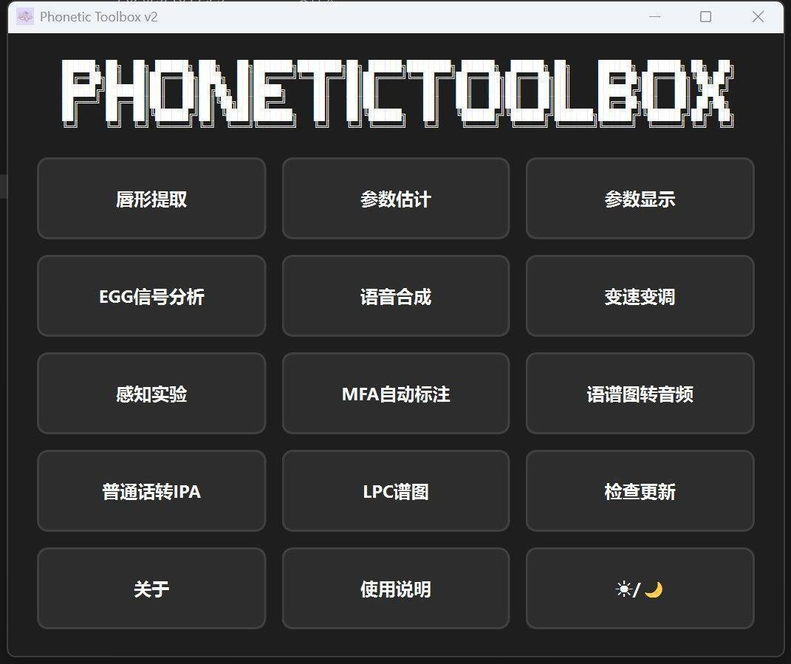
PhoneticToolbox 是一款基于 Python 和 PyQt6 框架自主研发的综合性语音分析与合成平台。PhoneticToolbox 在致敬并复刻经典 MATLAB 版 VoiceSauce 核心功能的基础上，为语音学研究者提供了一个现代化且易于扩展的图形化分析环境。相比于传统工具，它在易用性上实现了极大的跨越。
过去使用 VoiceSauce 时，研究者必须依赖庞大厚重的 MATLAB 环境才能运行脚本。考虑到大家在配置环境时经常遇到的苦恼，我们打造的 PhoneticToolbox 已经被整体封装为独立的 .exe 可执行程序。使用者无需具备编程基础，也不必去处理复杂的环境配置，只需在 Windows 系统下双击运行，便能直接投入到研究工作中，真正做到了即开即用。
在以往的语音学研究里，学者们常常要在不同的软件之间来回切换：提取参数用这一款，做合成换另一款，跑感知实验又要去寻找新的平台。这种工作流的割裂感不仅消耗科研精力，也很容易打断原本连贯的思路。PhoneticToolbox的设计初衷正是为了打破这层壁垒。它超越了单一参数提取器的局限，将声学分析、语音合成、生理信号处理以及感知实验深度整合为一站式工作站，让研究者可以把宝贵的精力全心全意地专注在学术思考本身上。
特别值得一提的是，PhoneticToolbox针对发声类型研究中的痛点进行了优化。比如在处理嘎裂这类复杂发声类型时，它集成了类似 REAPER 这样更具鲁棒性的基频检测算法。从全自动的数据提取到精细化的可视化修正，PhoneticToolbox为大家提供了一个完整的工作闭环，让日常繁琐的数据处理变得更加踏实和安心。
作者：中山大学 中国语言文学系（珠海）博士研究生 井立文
个人主页：https://www.zhihu.com/people/jingshaozi
请在此处获取最新版应用：https://github.com/Nephelium/PhoneticToolbox/releases
1.2 主界面导览

双击PhoneticToolbox.exe启动软件后，您将看到采用深色模式设计的主控制面板。（一定程度上能减轻科研人员长时间注视屏幕的视觉疲劳2333）点击右下角的开关灯按钮，可以切换至浅色模式。
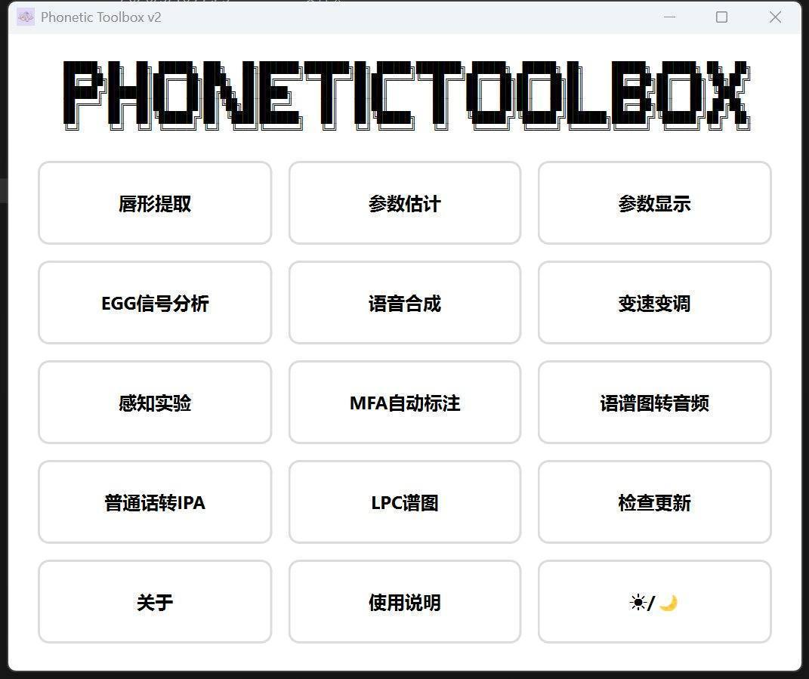
主界面摒弃了繁杂的菜单堆砌，采用直观的网格化布局，将十大核心功能模块一目了然地呈现于眼前，确保您能以最快速度进入工作状态 。
1.3 核心功能模块
PhoneticToolbox 的功能架构主要分为三大类：声学参数分析、语音编辑与合成、以及辅助工具。
声学参数分析核心
这是本软件最基础也最强大的部分，旨在对标VoiceSauce的功能。（除了共振峰提取时没有选择snake脚本）
参数估计
这是数据处理的起点。该模块能够批量处理.wav音频文件及.TextGrid标注文件，自动提取包括基频 (F0)、共振峰 (Formants)、以及复杂的声源参数（如 H1-H2, H1-A1, CPP, HNR 等）。系统集成了多种基频检测算法，包括经典的 Praat 算法以及专门针对嘎裂声优化的 REAPER 算法，确保了在复杂语音环境下的鲁棒性。
参数显示
提供交互式的可视化界面。用户可以加载计算好的数据文件，查看各类声学参数的轨迹及标注。
EGG 信号分析
专为生理语音学打造。支持双声道 EGG 信号的自动分离、归一化及逆滤波；能够精确检测声门速度商(SQ) 和闭合商(CQ)，并在语谱图上同步显示声门闭合/开放时刻（GCI/GOI），直观揭示声带振动机制。
语音操作与合成
这一板块为语音感知实验提供了极高自由度的材料制作能力。
可视化语音合成
内置了基于 Klatt 模型的串联/并联共振峰合成器。这是一个高度可视化的合成实验室，用户可以直观地调节 F0、共振峰频率、带宽以及声源类型（如耳语、气声、嘎裂等），实时生成符合特定声学特征的语音样本。
变速变调
基于 Parselmouth (Praat) 的 PSOLA 与重采样算法，提供高质量的语音操纵功能。支持对原始语音的基频曲线进行手绘式修改，或进行时长伸缩。您可以对原始语音的基频曲线和时长进行精细调节，可用于制作声调感知实验的刺激材料。
感知实验
一个轻量级、基于 Web 技术（HTML5/JS）的实验系统。支持快速构建 AX 区分、ABX 区分、情感识别等经典实验范式，生成的实验可直接在本地运行并自动记录反应时。
数据管理与辅助
手动数据 (Manual Data)
可直接查看保存的参数。
设置
允许用户自定义分析参数的默认值（如窗长、步长、基频范围等），以适应不同性别或语种的语音材料。
2 参数估计及显示
2.1 参数估计
单击 “浏览” 按钮，选择包含待处理音频的文件夹。默认情况下，参数提取结果（.csv）将输出至同一目录，您也可指定其他路径。
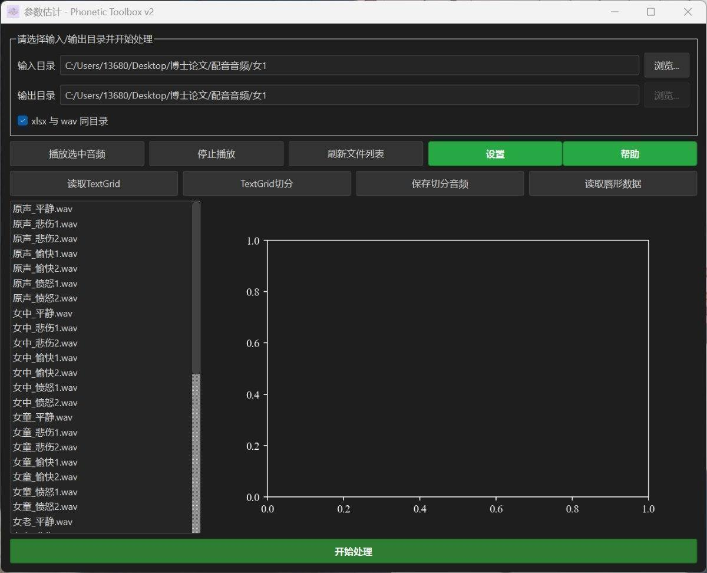
播放/停止播放
- 单击 “播放选中音频” 可试听当前文件，方便快速核查素材
- 单击 “停止播放” 即可立即终止播放，防止音频过长造成的不便。
刷新文件列表
若在当前文件夹中添加或删除了音频文件，单击 “刷新文件列表” 即可同步更新软件内的文件显示。
读取TextGrid
针对长音频处理，软件支持自动加载与音频文件同名的.TextGrid标注文件（需位于同一文件夹下），支持按照层级（Tier）批量导出片段。这些.TextGrid既可用于辅助参数提取，也可作为音频切分的依据。
TextGrid切分 / 保存切分音频
操作流程：首先在列表中选中待处理的音频（支持鼠标拖动多选或 Ctrl+A 全选）。单击 “TextGrid切分” 按钮，按钮文本将变更为 item[1]：xxxx（其中“xxxx”为当前层级名称）。重复单击该按钮，可切换至 TextGrid 的下一个层级。遍历完所有层级后，按钮状态将重置回初始的 “TextGrid切分”。若选中的音频缺失对应的 TextGrid 文件，程序将弹出如下提示：
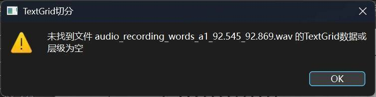
单击 “保存切分音频”，程序将依据 “TextGrid切分” 按钮当前选定的层级进行切分与导出。若当前未选择任何层级，将弹出警告：
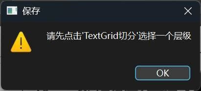
切分并保存成功后，系统将弹窗提示“已保存 xxx 个片段”。
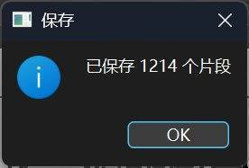
此时单击 “刷新文件列表”，列表中将显示所有切分后的音频片段。
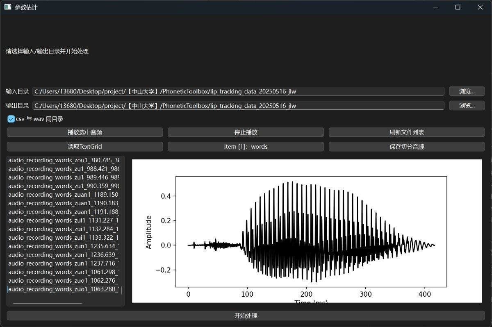
命名规则：切分后的文件名格式为原始文件名_当前item名称_当前interval名称_起始时间_终止时间.wav。
注意：
- 若在参数提取前进行切分，仅保存音频文件；
- 若在参数提取后进行切分，将同步保存对应的参数文件。
开始处理
单击 “开始处理” 按钮，程序将对当前文件列表中的所有音频进行批量参数提取。
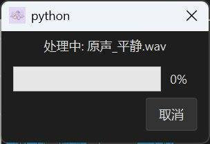
特别提示：若原始音频过长（例如超过 10 分钟），强烈建议先进行切分再处理，以避免严重的内存占用问题。（切分完成后，请务必将原始长音频移出当前文件夹，防止程序对其重复进行全量处理）。
设置界面
此区域包含了影响语音参数提取（如基频、共振峰、能量、频谱倾斜等）的核心参数。
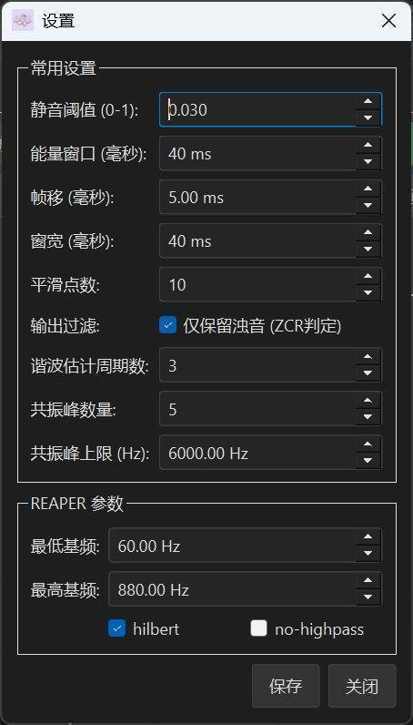
能量参数
能量阈值（比例）
- 含义：用于判断语音片段是“有声”还是“无声/静音”的相对能量阈值。
- 作用：系统会计算整段音频的最大能量（Max Energy）。如果某帧的能量低于
Max Energy × 能量阈值，该帧将被视为静音段，不进行某些参数的计算或将其标记为无效。 - 推荐值：默认
0.03(即3%)。如果录音背景噪音较大，可适当调高此值；如果语音较弱，可适当调低。
能量窗口（毫秒）
- 含义：计算短时能量时所使用的窗口长度。
- 作用：决定了能量计算的时间分辨率和平滑程度。
- 推荐值：默认
40ms。
帧与窗口参数
帧移（毫秒）
- 含义：两个相邻分析帧之间的时间间隔（步长）。
- 作用：决定了输出数据的时间密度。较小的值（如
1ms）提供更高的时间分辨率，但计算量增大，数据量增加。较大的值（如10ms）计算更快，但可能丢失快速变化的细节。
窗宽（毫秒）
- 含义：对每一帧进行频域分析（如计算共振峰）时所截取的信号长度。
- 作用：宽窗：频率分辨率高，时间分辨率低（适合观察谐波结构）。窄窗：时间分辨率高，频率分辨率低（适合观察共振峰）。
- 推荐值：默认
25ms (对于一般语音分析是通用的选择)。
平滑点数
- 含义：对输出的参数轨迹进行移动平均平滑的窗口大小（点数）。
- 作用：
0表示不进行平滑。大于0的值会使曲线更平滑，去除微小的抖动，但可能掩盖真实的快速变化。
周期估算参数
本软件在计算不同声学参数时，会根据基频（F0）动态调整分析窗口的长度（即截取多少个基音周期）。这两个参数的设置与VoiceSauce相同。
谐波估计周期数
- 含义：在计算频谱谐波幅值（如 H1, H2, H4, A1, A2, A3, H2k, H5k）时，截取的基音周期数量。
- 作用：谐波分析需要较高的频率分辨率，因此通常需要包含多个完整的基音周期。
- 推荐值：默认
3。过少可能会导致频谱泄露，过多会降低时间分辨率。
能量/CPP/HNR 周期数
- 含义：在计算能量 (Energy)、倒谱峰值突出度 (CPP) 和 谐波噪声比 (HNR) 时，截取的基音周期数量。
- 作用：这些参数对窗口长度的敏感度与谐波不同，因此独立设置。
- 推荐值：默认
5。
输出过滤
- 含义：对语音进行短时过零率检测，判断请浊音。
- 作用：若勾选，计算参数时，只计算浊音的参数。默认勾选。
本软件使用 REAPER 算法（Google 开发的鲁棒性基频追踪算法）作为主要的基频提取手段之一。
最低基频
- 含义：F0 搜索范围的下限。
- 作用：防止将低频噪音误判为基频，或防止产生过低的倍频程错误（Octave Error）。
- 推荐值：男性语音通常可设为
50-70Hz，女性可稍高。默认40Hz。若主要研究嘎裂相关发声类型，可设置为20。
最高基频
- 含义：F0 搜索范围的上限。
- 作用：防止将高频共振峰或噪音误判为基频。
- 推荐值：默认
500Hz。对于儿童或高音歌唱，可能需要调高。若主要研究假声相关发声类型，可设置为1000。
hilbert
- 含义：是否在分析前对信号应用希尔伯特变换。
- 作用：勾选：推荐用于经过非线性相位失真的信号（如录音室后期处理过的音频）或近讲麦克风录音。它可以改善残差信号的峰值特性。不勾选：适用于原始波形保持较好的信号。
- 默认：勾选。
no-highpass
- 含义：是否禁用 REAPER 内部默认的高通滤波器。
- 作用：勾选：禁用高通滤波。REAPER 默认会滤除低频分量以去除直流偏置和低频隆隆声。如果你的信号已经是清洗过的，或者你需要保留极低频成分，可以勾选此项。不勾选：启用高通滤波（REAPER 官方默认行为）。
- 默认：不勾选。
2.2 参数显示
处理完成后，请选择包含音频及 CSV 文件的目录。若加载成功，界面将显示当前文件夹下的全部音频文件，点击对应音频，则显示已提取的参数数据。
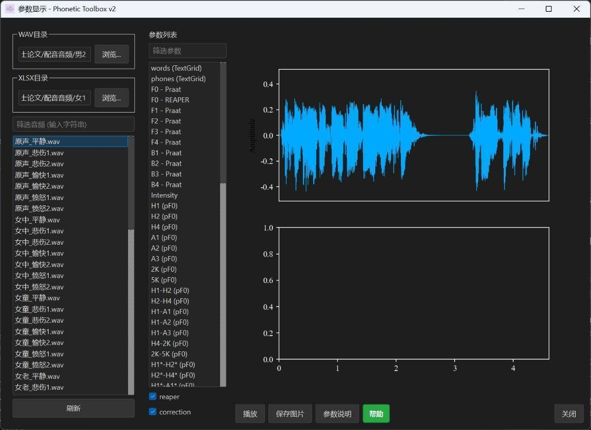
若当前音频尚未进行参数提取，则右侧参数列表一栏将显示为空。
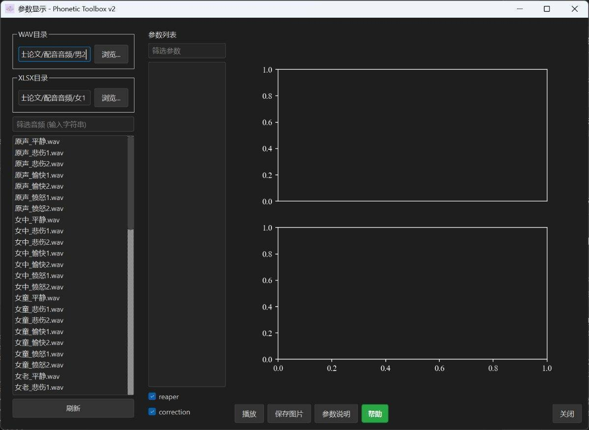
界面交互与可视化：
音频列表、参数列表以及可视化图窗的宽度均支持拖动调整，以适应不同的浏览需求。选中已处理的音频后，单击右侧任意参数，该参数的数值轨迹将实时绘制在图表中。
视图交互
缩放时间轴：滚动 鼠标滚轮，即可仅对 X 轴（时间）进行放大或缩小，方便在微调细节与查看全貌间切换。
左右平移：直接按住 鼠标左键 在图表中左右拖拽，即可平移视图查看不同时间段的内容。
参数批量选择：
* 鼠标拖拽：在参数列按住鼠标左键并拖动，可连续选中多个参数。
* Ctrl + 单击：按住 Ctrl 键单击不同参数，可进行非连续的多项选择。
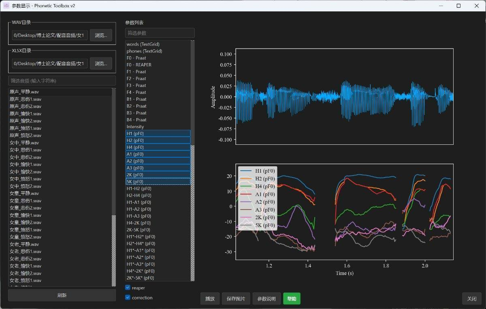
搜索筛选：
在搜索框中输入任意字符串，系统将实时筛选并显示文件名或参数名中包含该字符的条目，方便快速定位。
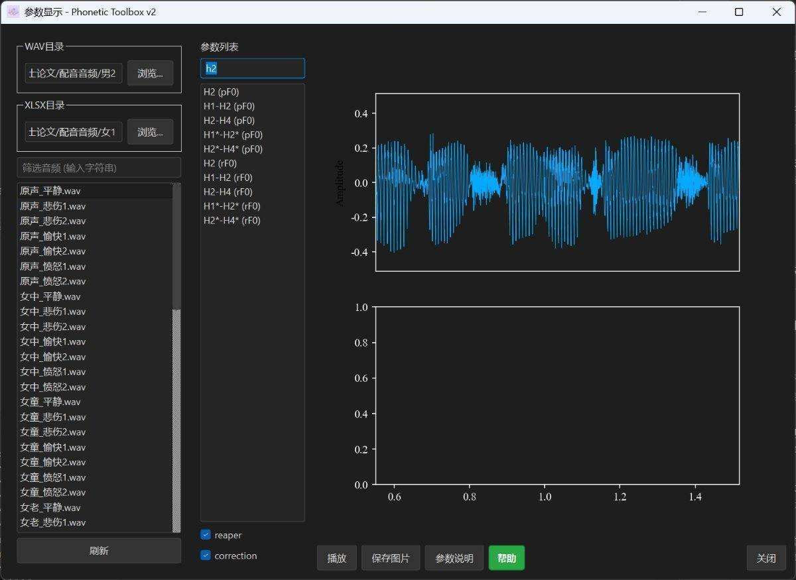
此外，也可以通过取消勾选下方的 reaper及correction来排除reaper相关的参数及校正后的参数。
TextGrid 可视化：
对于已读取 TextGrid 标注文档且未进行切分的音频，用户可以在界面中选择显示 TextGrid 不同层级（Tier）的标注内容，以便对照分析：
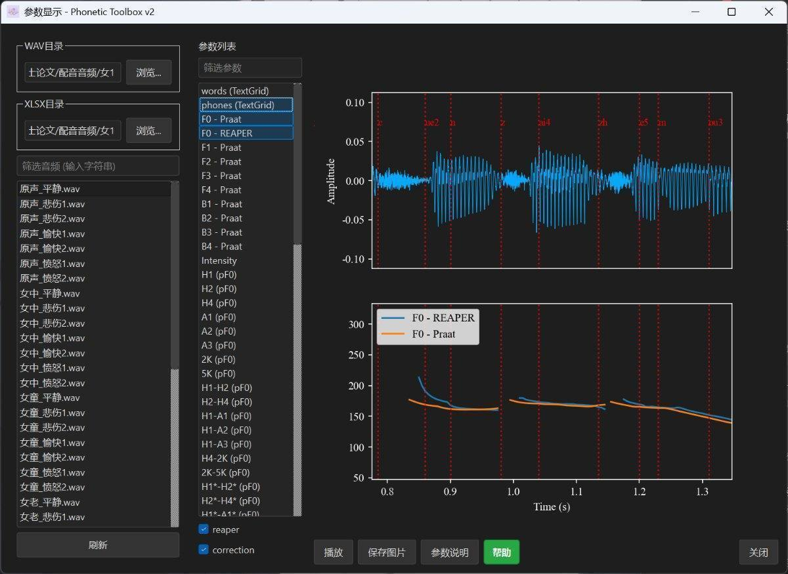
参数说明
点击该按钮，将会弹出声学参数的详细说明。
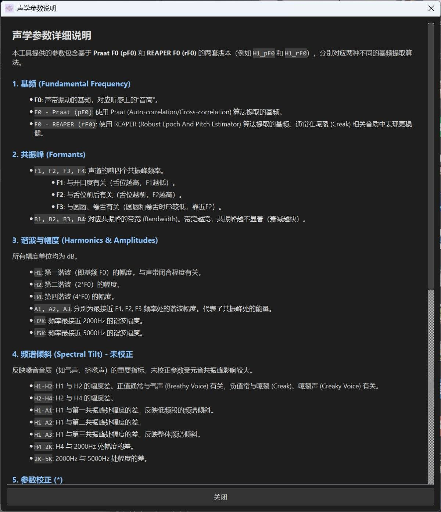
3 EGG 信号分析
3.1 初始界面与文件加载
EGG信号分析程序的初始界面如图所示：
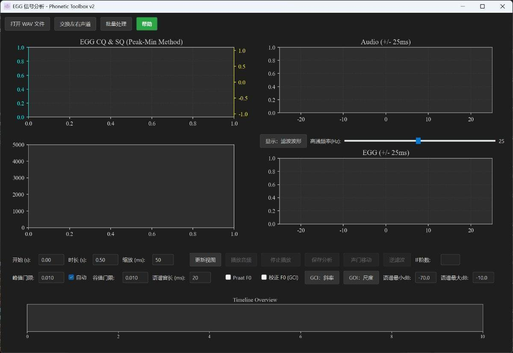
加载与预处理
单击左上角的“文件”，选择EGG信号（.wav文件）。
- 默认声道逻辑：软件默认左声道（Channel 0）是EGG信号，右声道（Channel 1）是音频波形。
- 归一化：为了统一显示幅度，软件加载时会自动将左右声道分别归一化至 -0.7 ~ 0.7 之间。
音频总览与导航
加载音频后，界面最下方会出现音频总览的波形图及滑块。
- 时间窗口：默认显示60秒的音频概览。
- 长音频导航：若总音频长度超过60秒，滑动最下方的进度条可查看后续内容。
- 快速定位：在底部波形图上单击鼠标左键，主视图区域的 “开始（s）” 参数会自动跳转至单击处的时间。
- 时长设置：主视图语谱图内的音频显示长度，可以在 “时长（s）” 处手动设置。
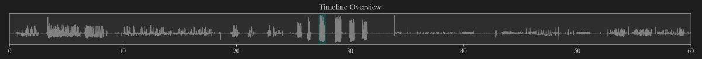
3.2 主视图交互与显示
在总览图或参数栏更新后，主视图区域（CQ、SQ图像及语谱图）会自动更新。
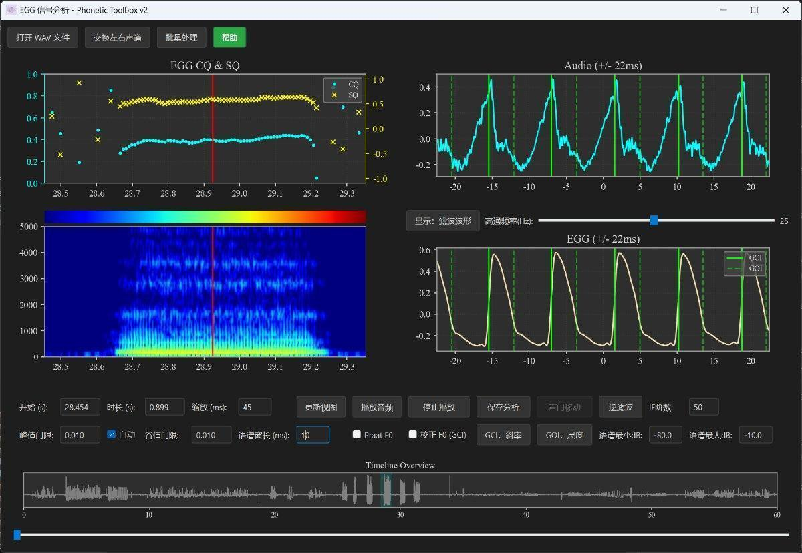
点击联动
在语谱图上单击鼠标左键。
- 光标定位：CQ、SQ图像及语谱图中会在对应时间点处显示红色的竖直线。
- 波形细查：界面右侧的“音频波形图”以及“EGG波形图”会同步放大显示单击处附近的波形细节（默认范围为50毫秒）。
- 调整缩放：修改下方的 “缩放（ms）” 处的数据，点击更新视图，可以改变右侧波形图的时间窗口大小（范围为10~200ms）。此外，也可以通过鼠标滚轮进行缩放。
播放控制
- 单击 “播放音频”：默认播放当前语谱图（ROI）时间范围内的音频。
- 单击 “停止播放”：立即停止播放，防止用户误操作播放过长的音频片段。
3.3 分析功能与参数设置
交换声道
若您发现您的音频信号和EGG信号的左右声道与软件默认情况（左EGG右音频）相反，可以点击菜单栏的“工具”→ “交换左右声道” 选项。软件会自动交换数据并重新加载，无需重新打开文件。
显示F0/校正F0
单击 “显示F0” 复选框，软件将调用 Parselmouth (Praat内核) 进行基频提取，并以黑色曲线绘制在语谱图中。
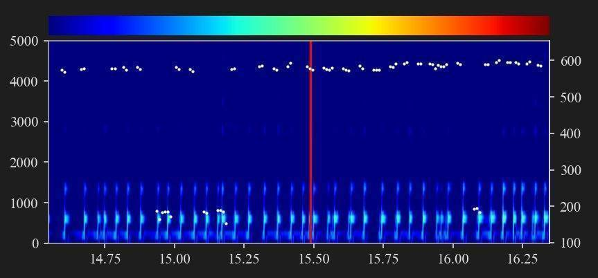
单击 “校正F0（GCI）”复选框，软件将使用EGG信号检测出的 GCI（声带接触点）的时间间隔 (F0 = 1/T) 作为当前的基频值。
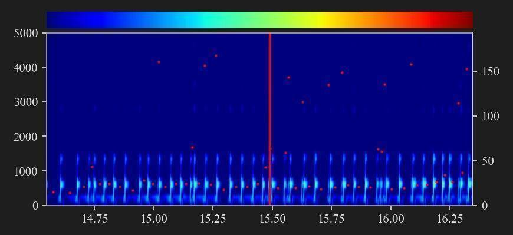
此功能对基频极低的发声类型（如嘎裂）的检测通常比声学算法更准确。
二者亦可同时显示在图上。
峰值门限/谷值门限
这两个参数用于控制 GCI（声门关闭时刻）和 GOI（声门开放时刻）的检测灵敏度。
- 峰值门限：用于检测 EGG 微分信号的正向峰值。软件默认开启 “自动” 模式，使用窗宽200ms帧移100ms的小窗内的信号强度自动设置峰值门限。取消勾选后可手动输入数值，锁定全局门限。
- 谷值门限：用于检测 EGG 微分信号的负向谷值，影响 GOI 的定位及开商（OQ）的计算。一般使用默认值就可以，无需调整。
- 自动：默认勾选。勾选时，峰值门限按照200ms的小窗、100ms的帧移进行自动检测，以每个小窗内最大峰值的60%设置峰值门限。若不勾选，则设置一个全局通用的阈值。适合在自动检测失效的片段使用。
语谱窗长（ms）
设置语谱图短时傅里叶变换（STFT）的窗长。
- 值越大（如50ms）：频率分辨率越高（能看清谐波），但时间分辨率越低（横向模糊）。
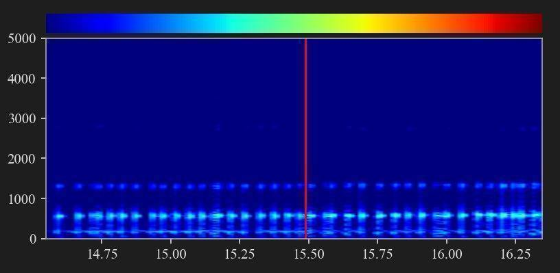
- 值越小（如5ms）：频率分辨率越低，但时间分辨率越高（能看清脉冲）。
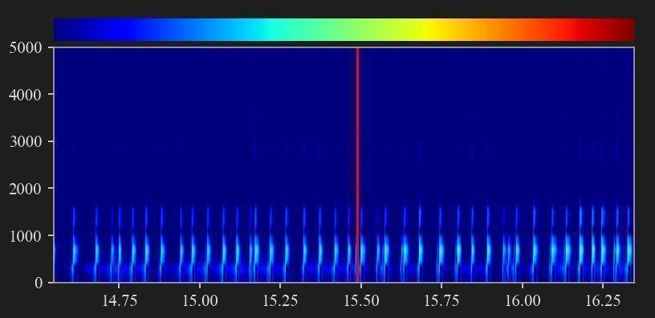
GCI：斜率/GOI：斜率
点击按钮可切换 GCI 和 GOI 的检测算法。默认使用GCI斜率法、GOI尺度法计算，单击后变成 “GCI：尺度” / “GOI：尺度”。
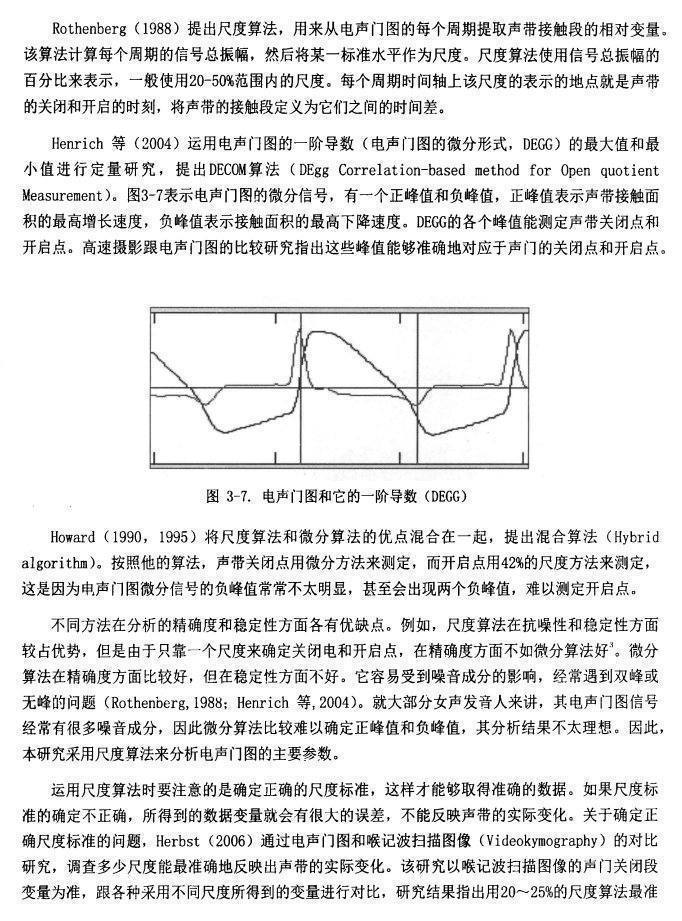
根据论文《汉语韵律的嗓音发声研究》，建议GCI使用斜率法，GOI使用尺度法。经测试，这种设置方式计算出的生理参数（CQ、SQ）比较稳定。
逆滤波 (Inverse Filtering)
该功能用于去除声道共振影响，还原声门波形。选择一段稳定的元音片段，点击 “逆滤波”。软件会自动保存两个WAV文件到原文件夹：
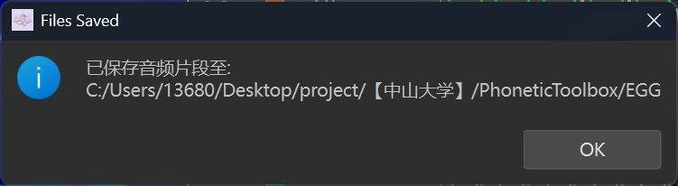
_ORIG.wav：原始音频片段。_IF.wav：逆滤波后的声源波形片段。
同时，会弹出一个新窗口展示逆滤波前后的波形及振幅谱的对比。
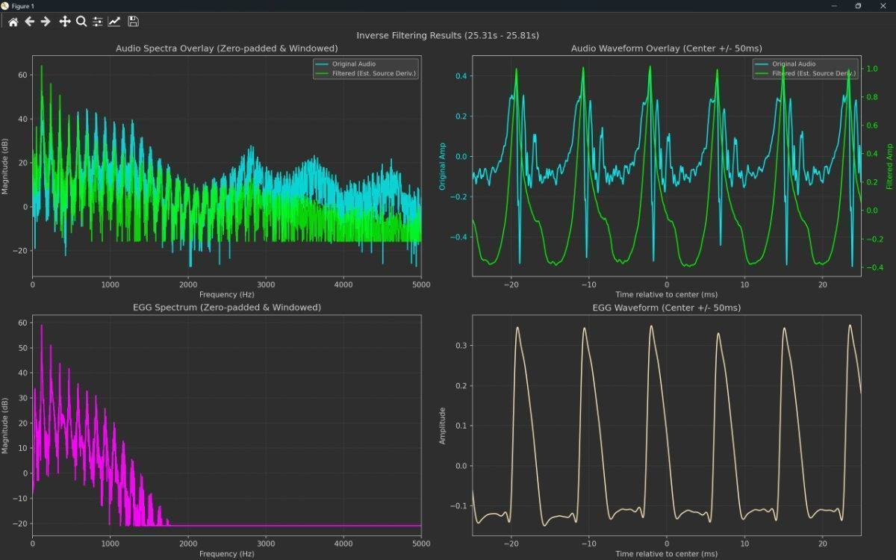
保存分析
点击 “保存分析” 按钮，软件会将当前时间范围内的分析结果导出至原音频文件夹。
- 图像导出：将语谱图、CQ/SQ趋势图、波形图保存为PNG图像（白底黑字，适合论文发表）。
- 数据导出：将当前范围内的CQ、SQ、F0等逐点数据保存为CSV文件。
（但是里面nan值较多，这是因为脚本是按照不同参数的每一个有效的时间点保存的，不同参数的时间点可能没有对齐，等我过两天修了这个bug或者您直接用批量处理的脚本） - 命名规则：
当前音频文件名_（开始）秒_（结束）秒_类型.png/csv。例如：
3_14_55s_16_35s_CQ_SQ.png
3_14_55s_16_35s_DATA.csv保存的图像如下：
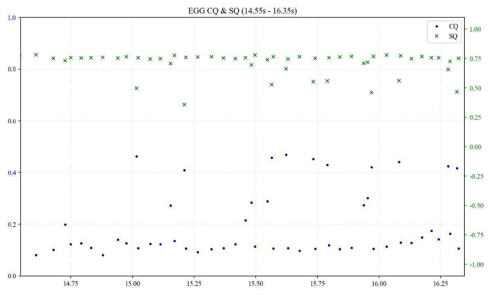
3_14_56s_15_56s_CQ_SQ.png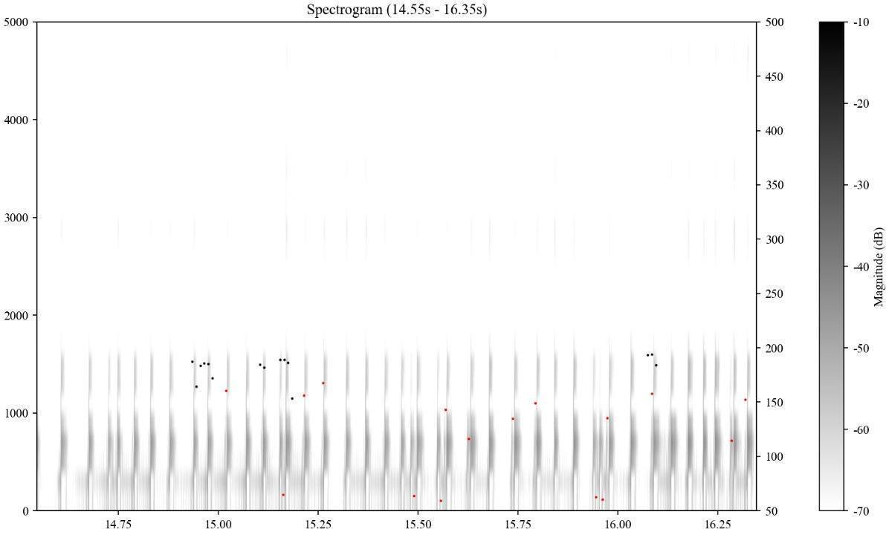
3_14_56s_15_56s_SPEC_F0.png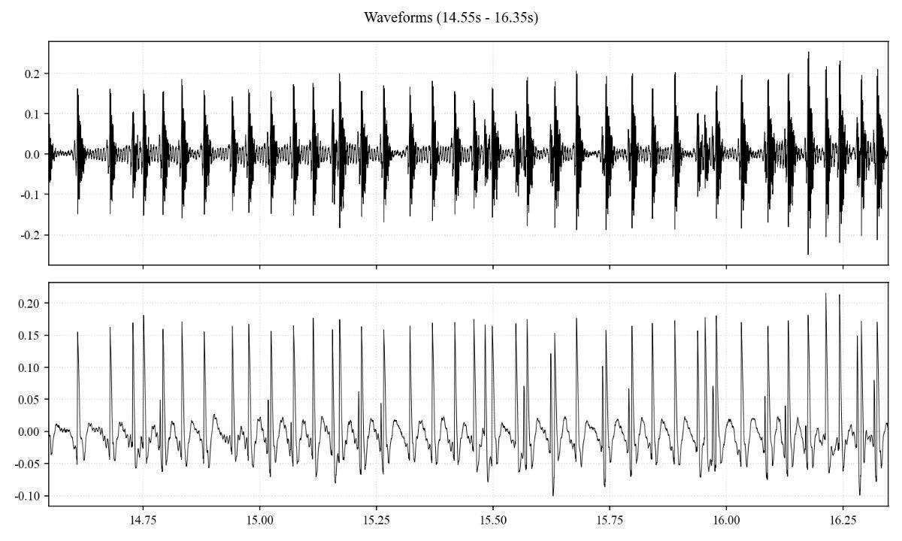
3_14_56s_15_56s_WAVEFORMS3.4 批量处理
对于大量数据，可使用批量处理功能自动计算并导出结果。
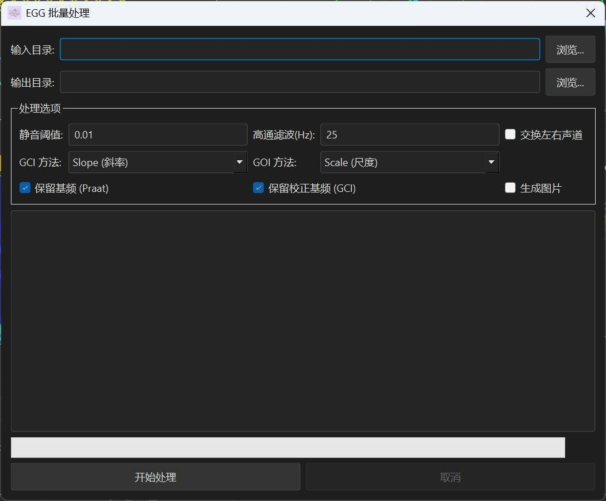
参数设置：
- 输入目录：选择包含wav文件的文件夹。
- 输出目录：选择输出处理结果的文件夹。
- 静音阈值：低于该能量的片段将被视为静音，不计算CQ/SQ。
- 高通滤波：设置批量处理时的EGG滤波频率（推荐30Hz以下，不宜过大，过大会影响CQ、SQ的值）。
- 交换左右声道：若这批数据的EGG信号在右声道，请勾选此项。
- GCI方法：计算GCI的方法，默认使用斜率法，可以进行修改。
- GOI方法：计算GOI的方法，默认使用尺度法，可以进行修改。
- 保留基频：是否保留praat计算的基频数据，默认保留。
- 保留校正基频：是否保留通过GCI周期倒数计算出的基频，默认保留。
输出结果：
软件会自动在输出目录下生成文件夹。文件夹内会默认保存每个音频（EGG）信号的波形图、语谱图、SQ/CQ图及参数表格。
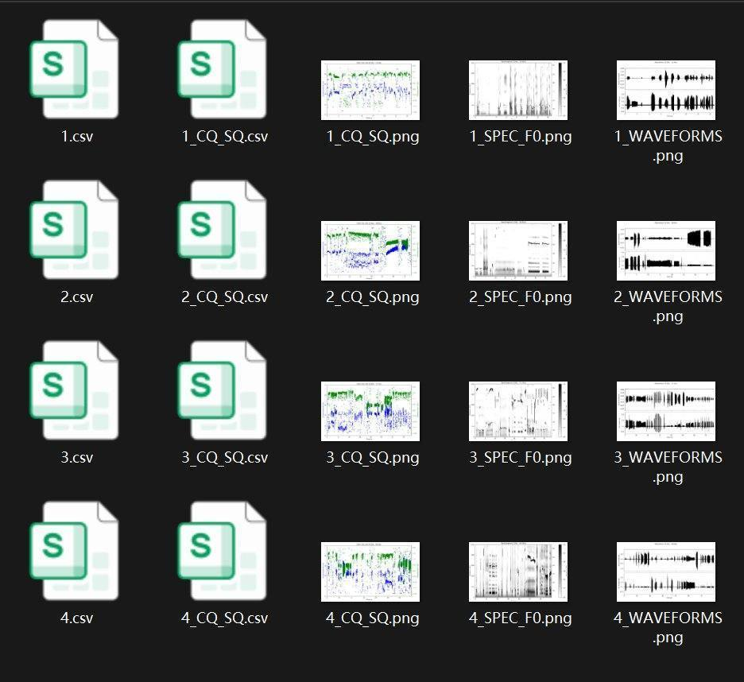
4 语音合成
4.1 系统概览及界面布局
本界面是一个可视化的语音合成与分析平台，旨在帮助语言学研究者通过交互式的方式探索语音产生的声学机制。它集成了经典的 Klatt 1980 串联/并联共振峰合成器，并辅以现代化的 Praat 分析接口，允许用户精细控制声源（如 F0、HNR、Jitter）和声道（共振峰 F1-F5）参数。
本界面可以从零开始合成元音，也可以对真实语音进行复制合成与参数修改。
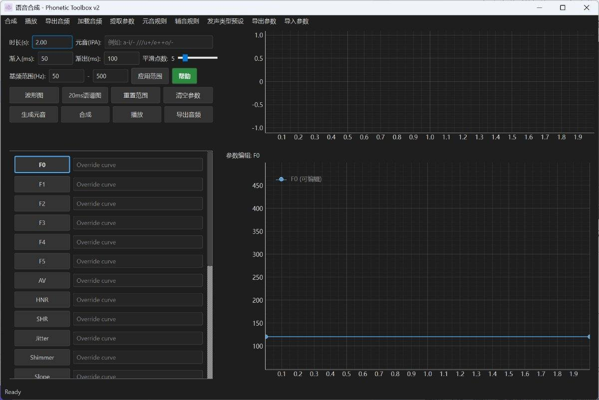
界面布局
软件界面主要分为三个区域：
顶部菜单栏及左上角按钮区域：用于文件操作、时长设置、元音生成及全局开关。
可视化视窗：
- 主要分为波形图/语谱图和参数曲线图两个部分。这些视窗占据屏幕主体，包含多个可交互的曲线编辑器。
参数设置区，通过点击按钮切换参数，对不同的参数进行展示及修改。
4.2 参数曲线编辑
这是本界面最核心的交互区域。每个参数都有独立的编辑面板。
操作手势：
拖动及缩放
- 可在曲线图中按住鼠标沿x轴或y轴拖动，当拖动一个图窗时，所有图窗的x轴范围将会统一变化，y轴不变。
- 可在曲线图中使用滚轮进行x轴缩放（y轴固定）。当拖动一个图窗时，所有图窗的x轴范围将会统一变化，y轴不变。
绘制曲线：
按住 Shift + 鼠标左键 拖动。这是最常用的修改方式，您可以像画画一样自由绘制参数轨迹。
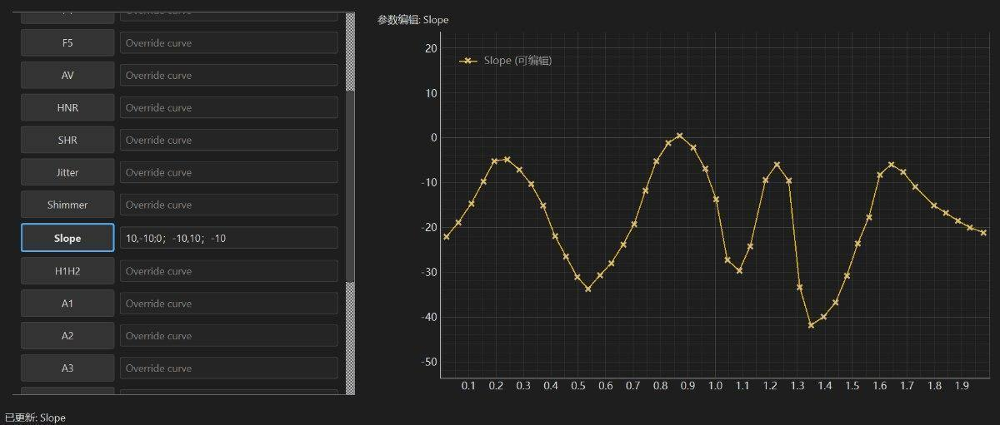
擦除/重置：
按住 Ctrl + 鼠标左键 拖动。选中的区域的参数将恢复到默认值。
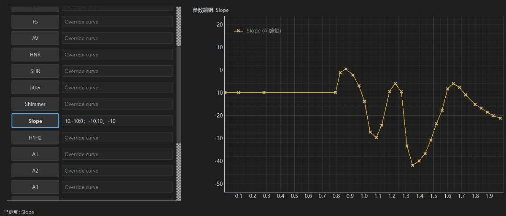
全局设定 (Global)：
在每个编辑器顶部的输入框中：
- 输入单个数值（如
-10），将整段音频的该参数设为恒定值。并且曲线变红，此时不可进行鼠标绘制编辑。
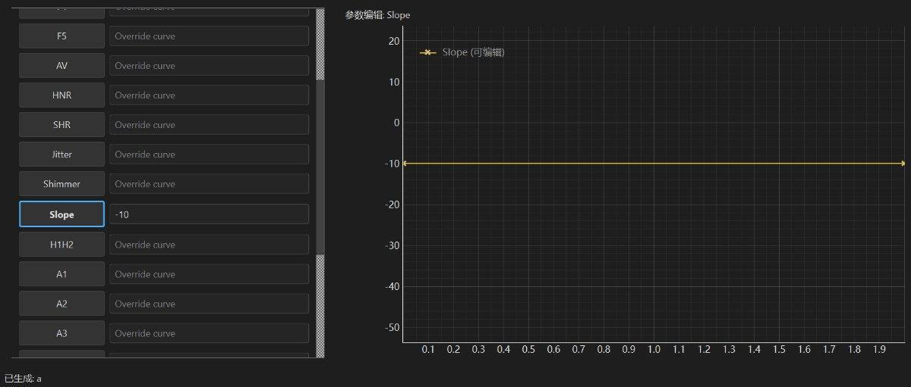
- 输入线性插值指令，使用逗号分隔数值（如
-10,0,-10,10,-10）,参数将从一个值线性过渡到另一个值。（全角逗号半角逗号均可）
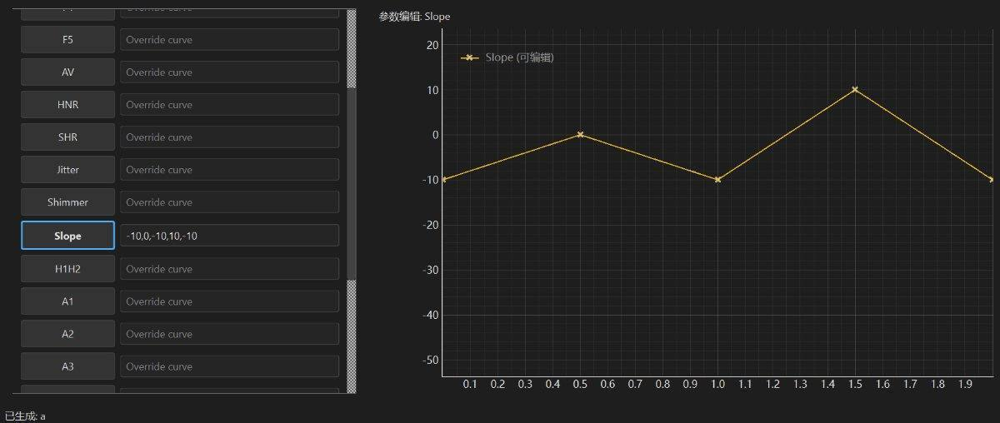
- 输入分段指令，使用分号分隔数值（如
-10；0；-10；10；-10），参数将呈现阶梯型过渡。（全角分号半角分号均可）
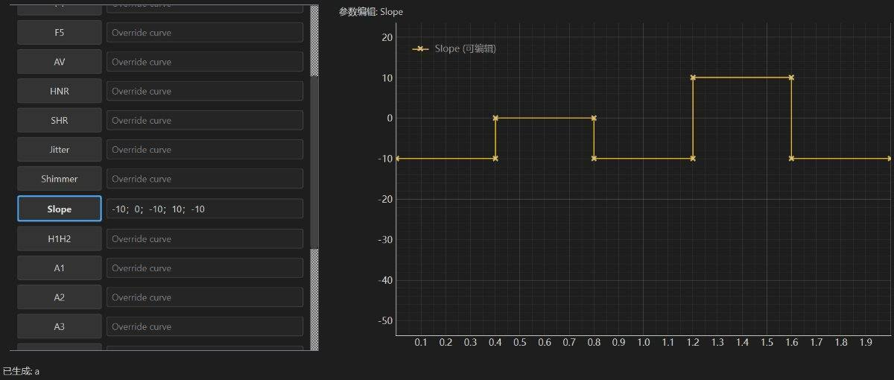
- 支持线性插值和分段相结合（如
10,-10;0；-10,10；-10）：
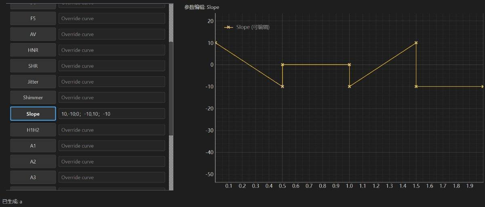
导入导出参数：
点击菜单栏的导出参数，可以将当前参数全部导出，保存为.csv文件。
点击导入参数，可以加载之前导出的或别人发来的参数文件。
参数字典
为了更好地理解调节的意义，下表整理了主要参数的含义：
| 参数名 | 全称 | 物理/声学含义 | 听感影响 |
|---|---|---|---|
| F0 | Fundamental Frequency | 声带振动的基频 | 音高 |
| AV | Amplitude of Voicing | 浊音源的振幅 | 声音的响度 |
| F1-F5 | Formant Frequencies | 声道的共振频率 | 决定元音的音色 |
| HNR | Harmonics-to-Noise Ratio | 谐波与噪声的比率 | 值越低，噪声能量越强，代表声音越“沙哑”或“充满气流” |
| Jitter | Frequency Perturbation | 基频的周期性抖动 | 较大的jitter可模拟粗糙感或病理嗓音。这个参数非常不稳定，一般设置得极低才能不影响听感。 |
| Shimmer | Amplitude Perturbation | 振幅的周期性抖动 | 较大的jitter可模拟粗糙感。这个参数也非常不稳定。 |
| SHR | Subharmonic Ratio | 次谐波比率 | 用于模拟嘎裂，嘎裂的SHR值通常在0.2以上 |
| Slope | Spectral Slope | 频谱的高频衰减斜率 | 值越小，声音越闷；值越大，声音越亮，一般不建议设置为大于0的值 |
| H1-H2 | First/Second Harmonic Diff | 第一与第二谐波的幅值差 | 衡量声门闭合程度（通常气声 H1-H2 较大，嘎裂 H1-H2 较小） |
这里，HNR、H1-H2、Slope目前使用的是频域滤波的方法进行设置的。
另外，对于Shimmer，即便设置的值为0，但是仅靠其他参数合成出来的音频，计算出的Shimmer也绝不为0。这些参数相互依赖、相互影响、相互制约。合成时输入的值，一定与最终参数估计时提取出的值有差异。
4.3 元音生成器
程序可根据用户输入的元音音标自动生成元音音频。步骤如下：
- 1.在顶部的 元音(IPA) 输入框中输入元音序列（仅支持 IPA 符号）。
- 2.设置平滑点数
- 3.点击 生成元音。
- 4.系统会自动计算 F1、F2、F3 的轨迹，并生成平滑的过渡曲线。
- 5.点击合成按钮。
程序支持的元音如下（实际命名时开闭和高低两套描述开口度方案保留一个即可，此处仅为展示）：
| IPA | F1 (Hz) | F2 (Hz) | F3 (Hz) | 舌位 (前后) | 开口度 (闭-开) | 开口度 (高-低) | 圆唇性 | 完整描述 (备注) |
|---|---|---|---|---|---|---|---|---|
| i | 270 | 2290 | 3010 | 前 | 闭 | 高 | 不圆唇 | 前闭(高)不圆唇元音 |
| y | 270 | 1800 | 2200 | 前 | 闭 | 高 | 圆唇 | 前闭(高)圆唇元音 |
| ɨ | 290 | 1400 | 2100 | 央 | 闭 | 高 | 不圆唇 | 央闭(高)不圆唇元音 |
| ʉ | 290 | 1200 | 2100 | 央 | 闭 | 高 | 圆唇 | 央闭(高)圆唇元音 |
| ɯ | 300 | 1100 | 2200 | 后 | 闭 | 高 | 不圆唇 | 后闭(高)不圆唇元音 |
| u | 300 | 870 | 2240 | 后 | 闭 | 高 | 圆唇 | 后闭(高)圆唇元音 |
| ɪ | 390 | 1990 | 2550 | 前 | 次闭 | 次高 | 不圆唇 | 前次闭(次高)不圆唇元音 |
| ʏ | 390 | 1500 | 2100 | 前 | 次闭 | 次高 | 圆唇 | 前次闭(次高)圆唇元音 |
| ʊ | 440 | 1020 | 2240 | 后 | 次闭 | 次高 | 圆唇 | 后次闭(次高)圆唇元音 |
| e | 390 | 2030 | 2600 | 前 | 半闭 | 半高 | 不圆唇 | 前半闭(半高)不圆唇元音 |
| ø | 390 | 1550 | 2200 | 前 | 半闭 | 半高 | 圆唇 | 前半闭(半高)圆唇元音 |
| ɘ | 390 | 1300 | 2200 | 央 | 半闭 | 半高 | 不圆唇 | 央半闭(半高)不圆唇元音 |
| ɵ | 390 | 1100 | 2200 | 央 | 半闭 | 半高 | 圆唇 | 央半闭(半高)圆唇元音 |
| ɤ | 460 | 1100 | 2300 | 后 | 半闭 | 半高 | 不圆唇 | 后半闭(半高)不圆唇元音 |
| o | 460 | 800 | 2250 | 后 | 半闭 | 半高 | 圆唇 | 后半闭(半高)圆唇元音 |
| ə | 500 | 1500 | 2500 | 央 | 中 | 中 | 不圆唇 | 央中不圆唇元音 (中央元音) |
| ɛ | 530 | 1840 | 2480 | 前 | 半开 | 半低 | 不圆唇 | 前半开(半低)不圆唇元音 |
| œ | 530 | 1300 | 2200 | 前 | 半开 | 半低 | 圆唇 | 前半开(半低)圆唇元音 |
| ɜ | 560 | 1350 | 2200 | 央 | 半开 | 半低 | 不圆唇 | 央半开(半低)不圆唇元音 |
| ɞ | 560 | 1100 | 2200 | 央 | 半开 | 半低 | 圆唇 | 央半开(半低)圆唇元音 |
| ʌ | 640 | 1200 | 2400 | 后 | 半开 | 半低 | 不圆唇 | 后半开(半低)不圆唇元音 |
| ɔ | 570 | 840 | 2410 | 后 | 半开 | 半低 | 圆唇 | 后半开(半低)圆唇元音 |
| æ | 660 | 1720 | 2410 | 前 | 次开 | 次低 | 不圆唇 | 前次开(次低)不圆唇元音 |
| ɐ | 660 | 1400 | 2300 | 央 | 次开 | 次低 | 不圆唇 | 央次开(次低)不圆唇元音 |
| a | 730 | 1090 | 2440 | 前 | 开 | 低 | 不圆唇 | 前开(低)不圆唇元音 |
| ɶ | 730 | 1000 | 2200 | 前 | 开 | 低 | 圆唇 | 前开(低)圆唇元音 |
| ɑ | 730 | 1100 | 2400 | 后 | 开 | 低 | 不圆唇 | 后开(低)不圆唇元音 |
| ɒ | 730 | 850 | 2300 | 后 | 开 | 低 | 圆唇 | 后开(低)圆唇元音 |
| ɹ | 400 | 1600 | 2600 | 前 (齿) | 闭 | 高 | 不圆唇 | 舌尖前不圆唇元音 (zi, ci, si的韵母，在国际音标表中是辅音) |
| ɻ | 400 | 1350 | 2200 | 后 (卷舌) | 闭 | 高 | 不圆唇 | 舌尖后不圆唇元音 (zhi, chi, shi的韵母，在国际音标表中是辅音) |
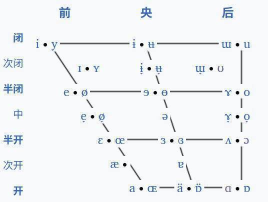
【附】国际音标输入法（网页版）：
https://ytenx.org/byohlyuk/IPA_IME
【附】国际音标推荐字体：
https://software.sil.org/zh-CN/doulos/download/
合成与播放
合成：点击菜单栏的 “合成”。系统将根据当前的所有参数曲线，调用 Klatt 算法生成音频。
- 注意：如果开启了 “锁定共振峰” 模式，逻辑会有所不同（详见 4.5 节）。
播放：点击菜单栏的 “播放”，试听合成结果。
导出音频：点击菜单栏的 “到处音频”，可以将合成结果导出为.wav格式的音频文件。
元音韵律语法
如果不加任何符号，默认所有元音（或空格）时间等长。使用韵律语法，可以更改每个元音（或空格）的长度。
+：当前元音时长增加0.1倍-：当前元音时长减少0.1倍*：当前元音时长变为2倍/：当前元音时长变为1/2倍
同一个元音（或空格），后面的韵律语法可以叠加使用，从左至右依次生效。最终按照各个元音（或空格）长度的比例进行赋值，如：
①：a-i/- ///u+/e++o/-
①：o ///i ///i ///a ///i ///o ///i ///i ///i ///a ///i对于①，元音长度比例分别为：
a：0.9
i：0.4
空格：0.175
u：0.55
e：1.2
o: 0.4按照2秒的总长度为各个元音赋值：
a：0.497秒
i：0.221秒
空格：0.097秒
u：0.303秒
e： 0.662秒
o: 0.221秒对于②，元音长度比例分别为：
元音：1.0
空格：0.175按照2秒的总长度为各个元音赋值：
元音：0.157秒
空格：0.027秒生成后，图中会用红色虚线标注元音（或空格）之间的分界线。此时可以编辑基频曲线为不同的元音赋予不同的基频。
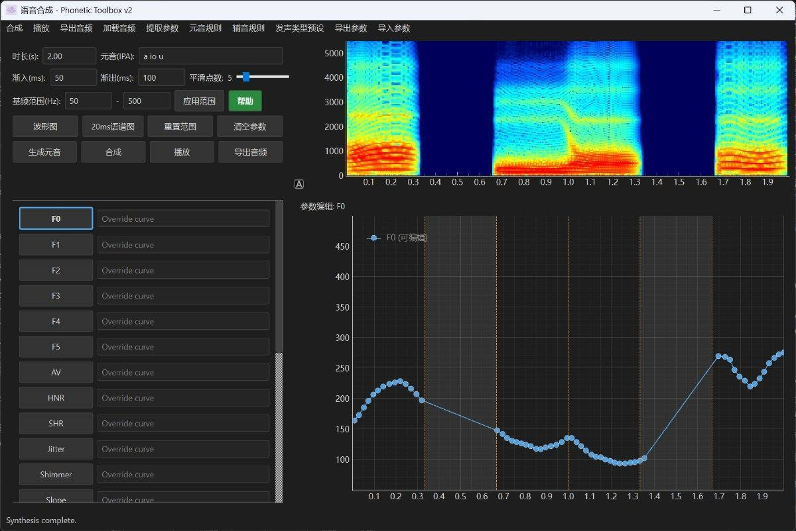
实际上，通过仔细绘制共振峰曲线和基频曲线，可以合成出非常逼真的元音音频。
渐入/渐出
合成元音时，首尾段或空格前后从0渐变至正常振幅的时间。
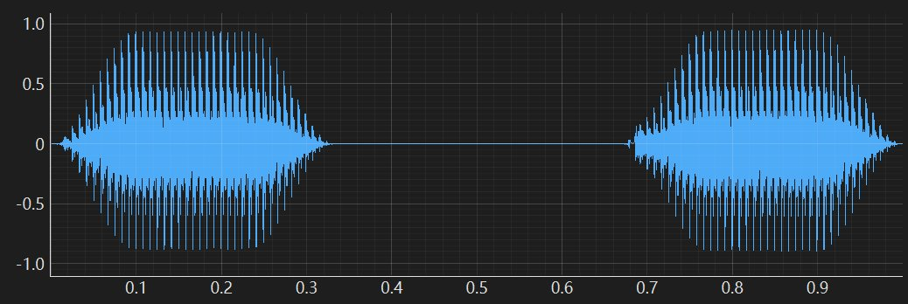
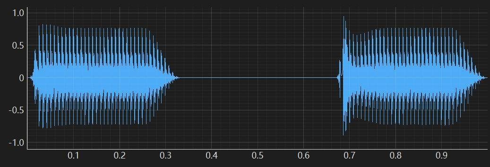
元音规则
单击菜单栏中的“元音规则”，将会弹出新的窗口，上半部分展示不同元音合成时所采用的共振峰参数。单击元音可复制该元音音标。下半部分展示了元音韵律语法。
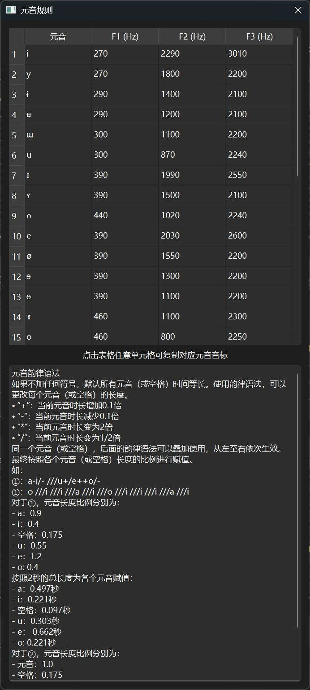
4.4 发声态预设
本程序预设了五种不同的发声类型（Phonation Types），分别是：
- 常态浊声（Modal Voice）
- 气声（Breathy Voice）
- 嘎裂（Creak）
- 耳语（Whisper）
- 假声（Falsetto）
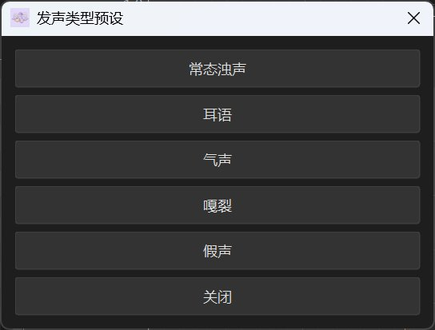
通过调整参数，可以大致模仿这五种发声类型。（但做不到非常相似）
以以下元音序列合成的音频为例：
a ///u//o ///ɯ//ɤ ///i ///u ///y常态浊声
预设如下：
{"HNR": 40, "Slope": -10, "H1H2": 0, "SHR": 0, "Jitter": 0.5, "F0": 120, "AV": 200}耳语:
预设如下：
{"HNR": 40, "Slope": -10, "H1H2": 0, "SHR": 0, "Jitter": 0.0, "F0": 120, "AV": 190}气声:
预设如下：
{"HNR": 20, "Slope": -10, "H1H2": 10, "SHR": 0, "Jitter": 0.0, "F0": 120, "AV": 200}嘎裂:
预设如下：
{"HNR": 40, "Slope": -10, "H1H2": -10, "SHR": 0.8, "Jitter": 3,"F0": 60, "AV": 200}假声:
预设如下：
{"HNR": 40, "Slope": -15, "H1H2": 0, "SHR": 0, "Jitter": 0, "F0": 300, "AV": 200}在合成连续语音时，可以参照以上发声类型，控制不同参数不同时刻的值，让发声类型在合成语音中连续变化。
4.5 复制合成
这一部分目前效果不佳。待后续修改更新。
用户可以导入一段真实录音，提取其参数，修改后再合成。步骤如下：
- 1.加载音频：菜单栏 -> 加载音频。
- 2.自动分析：菜单栏 -> 分析。
- 3.修改参数：在提取出的曲线基础上，手动修改某些部分（例如，保持 F0 不变，降低 HNR 来模拟气声）。
- 4.合成：点击合成，听到修改后的声音。
系统会调用 Praat 后端及参数估计的部分脚本，自动提取音频的 F0、共振峰 (F1-F4)、HNR、Jitter、Shimmer 等参数，并将其转化为曲线显示在编辑器中。
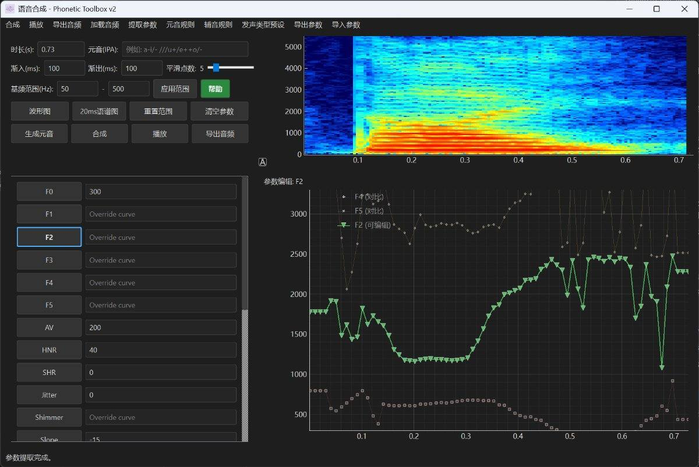
再次提醒，这一部分目前效果不佳。待后续修改更新。请直接使用元音合成器。
5 变速变调
5.1 软件界面与基本操作
changeF0 是一个基于 Python 和 Parselmouth (Praat) 的高级语音处理平台。它不仅支持对单个音频进行可视化的基频绘制和语速调整，还内置了批量生成器，能够根据设定的频率列表自动生成一系列连续变化的刺激材料，非常适合语音学听辨实验材料的制作。
软件界面与基本操作
启动程序后，将进入主工作台“基频实验室”。
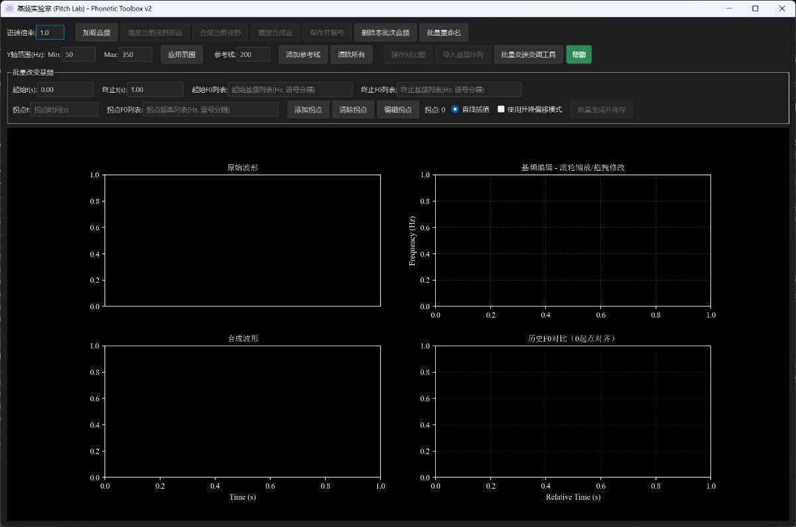
音频加载与视图
加载音频：单击 “加载音频” 选择文件（支持 .wav, .mp3, .flac）。加载后，界面会自动划分四个象限：
- 左上 (原始波形)：显示未处理的音频波形。
- 右上 (基频编辑)：核心交互区。显示原始 F0（青色虚线）和当前修改后的 F0（红色实线）。
- 左下 (合成波形)：点击合成后，此处显示新生成的波形。
- 右下 (历史F0对比)：这是一个非常实用的功能。它会自动读取当前文件夹下所有基于该文件生成的历史版本（命名带
_modified_x的文件），并将它们的 F0 轨迹画在一起，方便对比不同版本的差异。（手绘基频需要先点上方的“保存并编号”才会被加载进来）
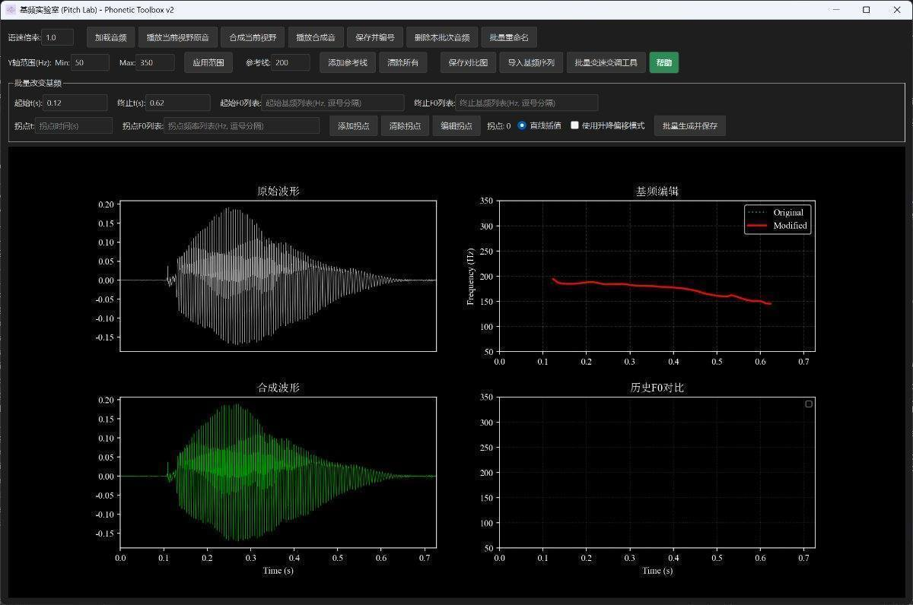
视图交互
缩放视野：在波形图或基频图中滚动 鼠标滚轮，可以放大或缩小时间轴（X轴），方便查看局部细节。
Y轴范围调整：在控制面板的“Y轴范围设置”中输入 Min 和 Max（赫兹），点击 “应用范围” 可锁定视图纵坐标，让音高变化在视觉上更加明显，也方便基频曲线的绘制。
参考线：在“参考线工具”中输入频率值（如200），点击 “添加参考线”，图中会出现水平虚线，辅助精确作图。
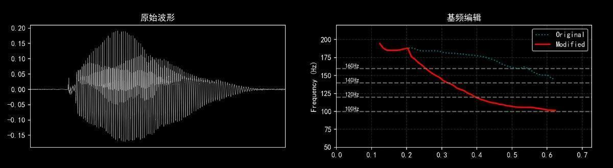
5.2 单文件精细编辑流程
手绘基频
在右上角“基频编辑”区域，直接按住Shift键再按住鼠标左键并拖动，即可像画画一样修改红色的基频曲线;按住Ctrl键再按住鼠标左键并拖动，鼠标拖过的部位会恢复为原始基频。代码逻辑会寻找鼠标经过位置最近的时间点，并将该点的 F0 值更新为您绘制的数值。
语速调整
在顶部的 “语速倍率” 输入框中填写数值：
1.0：原速。> 1.0：加速（如 1.2 表示 1.2 倍速，时长变短）。< 1.0：减速（如 0.8 表示 0.8 倍速，时长变长）。
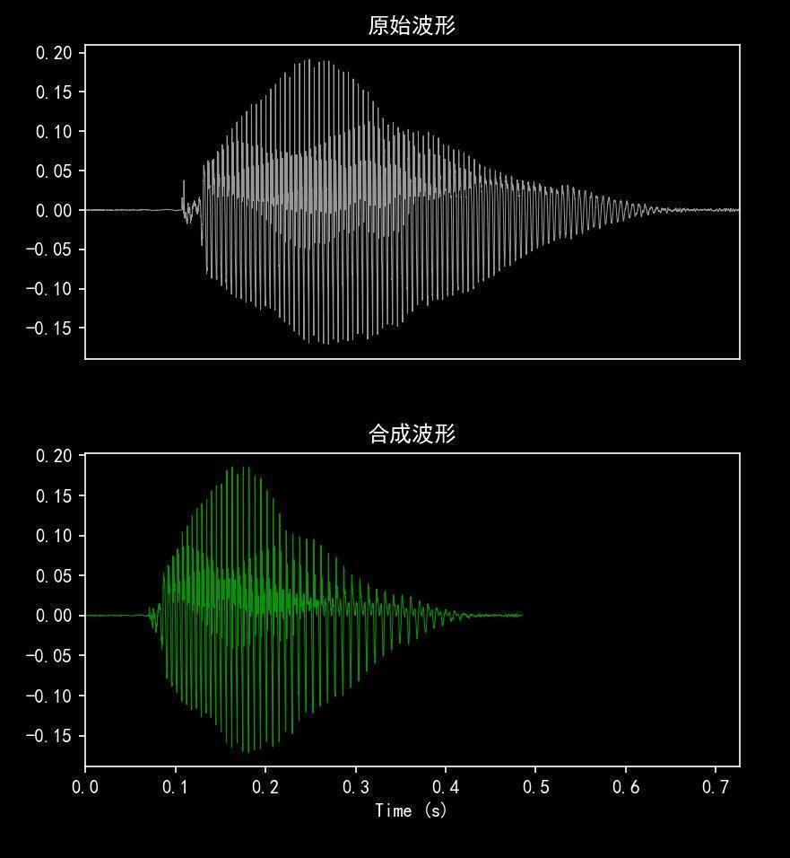
合成与试听
- 合成：修改满意后，单击 “合成当前视野”。程序会基于当前视野内的时间段、修改后的 F0 曲线以及语速倍率，生成新的音频片段。
- 试听：
- “播放当前视野原音”：对比参照。
- “播放合成音”：检查修改效果。
智能保存与版本管理
保存：单击 “保存并编号”。程序会自动在原文件夹下生成新文件，命名格式为 原文件名_时间范围_modified_序号.wav。系统会自动检测已有的序号并自动递增（如 _1.wav, _2.wav），防止覆盖。
对比图更新：保存后，右下角的“历史F0对比”图会自动刷新，将刚保存的曲线加入对比序列。
文件管理：
- “删除本批次音频”：一键删除当前视野对应的所有历史修改文件。
- “批量重命名”：为当前批次文件添加统一前缀。
- “保存对比图”：将右下角的历史对比轨迹导出为独立的 PNG 图片。
1.5倍语速：
0.5倍语速：
乱画的基频：
默认保存名称为：原始音频名称_起点时刻_终点时刻_modified_1（序号）
【注意】：读取音频后会默认读取当前加载的音频程序直接修改保存且未重命名的所有音频，并加载至“历史F0对比”图窗中。此时若选择“删除本批次音频”，会默认将所有加载的音频全部删除。删除时请核对数量，以及确保生成后重命名，或没有之前修改过的音频还留在当前文件夹。
再举一个例子
之前保存的常态浊声的音频：
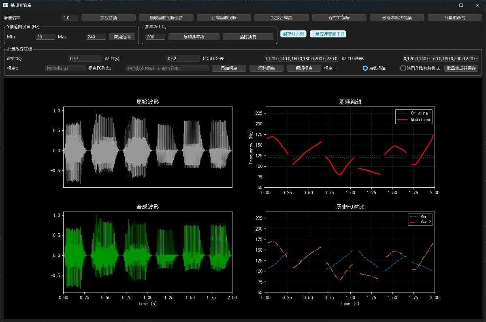
- 原音频
- 绘制基频曲线后的音频1：
- 绘制基频曲线后的音频2：
想怎么画就怎么画hhh
5.3 自动化工具
线性/动态基频批量生成器
位于界面下方的 “批量改变基频” 面板，支持“笛卡尔积”式的批量生成。
功能逻辑
用户可以输入起始时间、终止时间，并为起点和终点分别输入一个频率列表（用逗号分隔，如 100,120,140,160,180,200,220）。程序会自动组合这些频率点，生成多条 F0 轨迹并保存为音频。
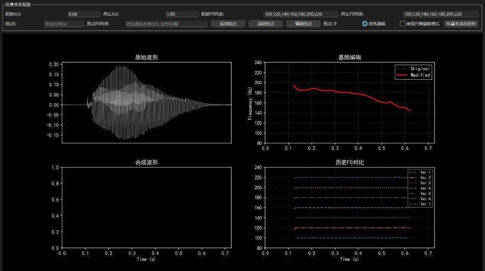
- 100Hz
- 160Hz
- 220Hz
【注意】：起始时间和终止时间一定按照基频编辑中的基频曲线来编辑。如当前基频只在0.13-0.62s区间内有值，那么起点最好填写0.13，终点最好填写0.62。
（【更新】新版本中已修正，自动将起始及终止点设置为音频浊音段的首尾帧。）
拐点系统
点击 “添加拐点” 或 “编辑拐点”，可以设置中间的时间点及其频率列表。
连接方式：在“编辑拐点”表格中，可以设置相邻点之间的连接逻辑：
- 全连接 (Full)：前一层的所有点与当前层的所有点两两组合（生成数量剧增）。
- 顺序 (Order)：第1个点连第1个点，第2个连第2个……（要求列表长度一致）。
- 逆序 (Reverse)：第1个点连倒数第1个点,第2个连倒数第2个……
- 常量 (Constant)：只有一个点，可以和加一个时间节点的所有其他点连接。如果输入向量，默认使用第一个点。
可以直接在“批量改变基频”栏目添加拐点、清除所有拐点：
当然，更推荐的是直接点击“编辑拐点”，进行所有点的统一设置。
【重要】不同连接方式的例子（以一个拐点为例）：
全连接（全连接-全连接-全连接）
此时程序将会生成6×6×6共216条音频。
常量（常量-顺序-常量）：
顺序（顺序-顺序-全连接）：
逆序（逆序-顺序-全连接）：
逆序（顺序-逆序-顺序 / 逆序-顺序-逆序）：
命名格式如下：原始音频名称_起点时刻_终点时刻_modified_seg_基频时间起点_基频时间终点_kn1（拐点1、拐点2、拐点3……）_lin（线性插值）_Fpath_起点基频_拐点基频_终点基频_拐点1时间_拐点1基频_拐点2时间_拐点2基频_拐点3时间_拐点3基频……_combo1_1（序号）
如：
dai1_0.00_0.73_modified_seg_0.13-0.62_kn1_lin_Fpath_160.0-100.0-180.0_k0.33_100.0Hz_combo113_113.wav若当前音频生成有误，可以一键删除当前批次所有音频
若无误，此时可以将批量生成的音频批量重命名：
结尾处关于时间和基频的参数建议保留。
注意：
- 批量重命名后无法一键批量删除，只能从文件夹中删除。
- 读取音频后会默认读取当前加载的音频程序直接修改保存且未重命名的所有音频，并加载至“历史F0对比”图窗中。此时若选择“删除本批次音频”，会默认将所有加载的音频全部删除。删除时请核对数量，以及确保生成后重命名，或没有之前修改过的音频还留在当前文件夹。
升降偏移模式
勾选后，输入的频率值将被视为相对于原始 F0 的偏移量（Hz），而非绝对频率值。
点击 “批量生成并保存”，程序将根据组合逻辑，瞬间生成多个音频文件。
命名格式如下：原始音频名称_起点时刻_终点时刻_modified_seg_基频时间起点_基频时间终点_kn1（拐点1、拐点2、拐点3……）_lin（线性插值）_offset（升降偏移模式）_Fpath_起点基频_拐点基频_终点基频_拐点1时间_拐点1基频_拐点2时间_拐点2基频_拐点3时间_拐点3基频……_combo1_1（序号）
举个例子：
此时将会生成8个音频：
基频极低时，可以合成类似嘎裂的听感。
5.4 批量处理工具
点击界面顶部的 “批量变速变调工具”，可打开独立的批处理窗口。
此工具用于对整个文件夹的音频进行统一的宏观调整：
浏览：
- 选择包含音频的文件夹。
设置参数：
- 语速倍率：整体拉伸或压缩时长。
- 音高倍率：按比例升降调（如
1.1表示整体升高10%）。 - 音高偏移：按赫兹数值平移（如
20表示整体升高20Hz）。
开始处理：
程序会自动在原目录下新建 processed_... 文件夹，并输出处理后的文件，同时显示处理进度日志。
6 感知实验
6.1 实验设计与配置
感知实验平台是一个基于 Web 技术构建的轻量级、无需后端的听觉感知实验平台。它不仅支持基础的单刺激听辨，还全新集成了 AX、ABX、AXB 等经典的语音区分任务范式。平台支持通过可视化界面进行实验设计、音频刺激呈现、问卷调查以及反应时数据记录，非常适合开展语音感知、听辨实验等心理学与语言学研究。
实验范式选择
启动平台后，首先进入 “范式选择” 界面。这是构建实验的第一步，决定了后续的文件管理结构与播放逻辑。
支持的范式：
- 单刺激 (X)：传统的听辨任务。播放一个音频，要求被试根据直觉做出判断（如：辨认声调、元音类别）。
- 区分任务 (AX)：播放序列 A -> X。被试需判断 X 是否与 A 相同，或判断 X 的某种属性。
- 区分任务 (ABX)：经典的范畴感知范式。播放序列 A -> B -> X。被试需判断 X 听起来更像 A 还是更像 B。
- 区分任务 (AXB)：播放序列 A -> X -> B。被试需判断中间的 X 更像 A 还是更像 B。
实验设计与配置
选择范式后，点击“进入实验设计”，即进入 “实验设计器” 界面。左侧导航栏提供了五个主要功能模块：音频数据库、播放序列、实验参数、问卷设置和资源助手。底部提供了项目保存与加载的快捷入口。
音频资源管理 (音频数据库)
在 “音频数据库” 标签页中，界面布局会根据你选择的范式自动调整。
分组管理：
- X 范式：仅显示一个上传区域（刺激列表 X）。
- AX 范式：显示两个上传区域，分别用于上传 参照刺激 (Stimulus A) 和 目标刺激 (Stimulus X)。
- ABX/AXB 范式：显示三个上传区域，分别对应 Stimulus A、Stimulus B 和 Stimulus X。
添加资源：
- 可以将对应分组的音频文件直接拖入各自的虚线框内，或点击上传按钮。
- 支持格式：常见的音频格式 (
.mp3,.wav,.flac,.ogg,.m4a等) 。
预览与管理：
- 已加载的资源会分类显示，支持点击文件名右侧的播放按钮进行预览播放。点击列表上方的 “清空列表” 按钮可重置数据库。
播放序列控制
在 “播放序列” 标签页中，系统会自动根据上传的 X 组 文件生成试次（Trial）。
复杂范式配对逻辑：
- 在 AX、ABX 等复杂范式下，系统默认按文件顺序将 A、B 组文件与 X 组文件进行对应。
- 列表会清晰地显示每个试次的组成结构（例如：
A: file1.wav|B: file2.wav|X: test.wav）。 - 若某一组音频缺失（如 A 组文件少于 X 组），列表中会以红色高亮提示 [缺失]。
排序策略：
- 正序 (A-Z)：按 X 刺激的文件名字母顺序升序排列。
- 倒序 (Z-A)：按 X 刺激的文件名字母顺序降序排列。
- 随机洗牌：一键打乱播放顺序，实现伪随机呈现。
- 手动排序：支持通过鼠标拖拽列表项前面的抓手图标来微调具体的播放顺序。
实验参数配置
在 “实验参数” 标签页中，除了基础设置外，新增了针对序列播放的控制参数。
基础显示：
- 实验标题：设置实验的名称。
- 指导语：设置实验开始前的说明文本，支持 HTML 格式（如换行、加粗）。可勾选 “使用大字” 以提高可读性。
- 试次间展示语：设置在两个试次之间显示的文本（如“请准备下一题”）。同样支持 HTML 和大字模式，并可选择是否启用。
播放控制：
- 自动进入下一题：试次结束后自动跳转。
- 按任意键进入下一题：试次结束后需被试按键才继续。
- 提示音：是否在每个试次开始前播放短暂的“嘟”声提示。
- 显示文件名：是否在实验运行时显示当前播放的文件名。
- 试次间隔：设置两个试次之间的等待时间（毫秒）。
- 刺激间间隔 (ISI)：专为 AX/ABX/AXB 范式设计。设置序列中各音频播放之间的静默间隔时间（毫秒），默认为 500ms。
- 自动播放：勾选后，进入试次时自动开始播放序列（如 A...500ms...B...500ms...X）；否则需被试手动点击播放。
按键设置：
- 自定义反应键（如
1键代表“像 A”，2键代表“像 B”）。
问卷与表单 (问卷设置)
平台内置了问卷系统，用于在实验开始前收集被试信息。
题型支持：
- 文本：用于输入姓名、年龄等开放式信息。
- 单选：用于性别、利手等互斥选项。
- 多选：用于多项选择题。
选项设置：
- 对于单选和多选题目，可以通过逗号分隔的方式快速输入选项内容。
必答设置：
- 可设置题目是否为必填项。
动态编辑：
- 支持自由添加、删除题目，实时调整问卷结构。
资源助手 (高级功能)
“资源助手” 标签页提供了批量处理实验素材的工具：
生成指导语文档：
- 可以将本地文件夹拖入，生成包含文件路径的
.xlsx模板。支持设置 “路径前缀”，便于在不同设备间迁移实验时保持路径一致性。（之所以选择.xlsx，是因为.csv在修改时输入中文，读取后容易出现乱码）
导入播放列表 (XLSX)：
- 支持通过上传 XLSX 文件批量定义复杂的实验序列。
- 列头识别：系统会自动识别表头。
File_A/A：指定 A 刺激的文件路径或文件名。File_B/B：指定 B 刺激的文件路径或文件名。File_X/X：指定 X 刺激的文件路径或文件名。Instruction/展示语：指定该试次的特定指导语。- 导入后，系统会自动在已上传的音频库中查找对应文件并建立关联。
编辑试次间指导语：
可以在播放序列页面手动更改每个音频条目的指导语。
8. 项目保存与加载
- 保存配置：设计完成后，请单击左侧底部的“保存项目配置”按钮。这将把当前的音频列表、播放顺序、参数设置及问卷结构导出为
.json文件。请务必保存，防止误关闭网页导致配置丢失。 - 加载配置：下次实验时，点击“加载项目配置”并选择之前的
.json文件，即可瞬间恢复所有设置（注意：需确保同名的音频文件已重新加载到音频数据库中）。
6.2 实验运行与数据导出
运行实验
点击左侧底部的 “开始运行实验” 按钮，进入正式实验流程：
被试信息登记：
被试填写预设的问卷信息（如姓名、性别等）。
指导语阅读：
全屏展示实验指导语，点击任意处开始实验。
听音辨认：
- 系统根据预设参数（如提示音、自动播放）呈现刺激。
- 播放结束后，被试根据直觉按下键盘上的对应按键（如
1、2）进行作答。 - 界面上方显示当前进度条，系统后台自动记录按键内容及反应时(RT)。
- 若需要中断试验，可以点击右上角的“强制结束”，此时已实验的部分会被保存。
- 在 AX/ABX/AXB 模式下，界面中央会显示对应的字母卡片（A、B、X）。音频播放时，对应的卡片会高亮显示并伴随动态波形效果，帮助被试直观定位当前听到的声音。
数据导出
实验结束后，系统会自动跳转至结束页面，并触发数据下载。刚刚的实验结果会被保存为.csv文件。此时系统会提醒用户保存当前配置，或返回设计器。返回设计器时，之前的配置不会消失，会一并保存。
数据格式：
- 生成
.csv表格文件，文件名为被试ID_时间戳.csv。
包含内容：
被试信息：
- Participant_ID：被试者序号。
- Timestamp_Date：实验日期。
- Timestamp_Time：实验时间。
- Q_xxx：问卷内容（如Q_姓名/编号、Q_性别等）。
试次数据：
- Trial_Index：试次序号。
- Audio_Filename：记录主要刺激（X）的文件名。
- Response_Key & Reaction_Time_ms：被试的按键与反应时。
- Is_Valid_Key：按键是否有效。
该数据文件可直接用于后续的统计分析（如 R 语言或 SPSS）。
用户可对该表格进行进一步的处理，如统计反应时、计算正确率等等。
7 唇形提取
7.1 唇形录制
本界面是专为语音学研究设计的唇形特征自动提取工具。它基于 MediaPipe Face Mesh 深度学习框架，能够以高帧率实时捕捉面部 468 个关键点，并针对语音发音过程中的唇部运动进行量化分析。
软件的核心功能在于消除头部运动干扰。通过计算面部轮廓的相对比例，将唇部特征参数进行归一化处理，确保被试者在摄像头前的自然前后移动或头部偏转不会显著影响唇形数据的准确性。
启动程序后，需等待程序加载数秒。随后屏幕将显示准备界面。
快捷键操作
r (Record)：开始/停止录制。每次录制前均会让用户选择保存数据的地址。
- 开始时：自动新建数据文件夹，重置时间戳。
- 停止时：保存音频 (
.wav)、数据 (.pkl) 并自动绘制趋势图 (.png)。
q (Quit)：退出程序。如果正在录制，会强制关闭，不会保存当前数据。
控制状态
- STANDBY (白色)：待机状态。此时仅预览，不保存数据。
- RECORDING (红色)：录制状态。此时系统正在同步采集视频特征数据与音频信号。
实时状态叠加层
在视频画面的上方，以绿色字体显示当前的实时计算数值。这些数值对应当前帧的瞬时状态：
- Height：归一化后的唇高度。
- Width：归一化后的外唇宽度。
- Area：唇部开口面积占面部总面积的比例。
- Open：归一化后的唇垂直开口度。
- Face Width / Height：面部轮廓的原始像素尺寸（用于参考距离）。
- Time：录制开始后的相对时间（秒）。
- 面部网格：画面中覆盖在人脸上的银灰色网格即为 MediaPipe 识别到的面部拓扑结构。
注意：实验开始前，请确保网格稳定地覆盖在被试者面部。如果网格抖动或消失，说明光线不足或距离过远。
特征参数定义与计算方法
本章节详细定义了软件输出的各项声学与生理特征参数。所有“归一化”参数均已消除距离影响。
参考基准
为了实现归一化，系统首先定位面部轮廓的极点：
- Face Width (面宽度)：左脸颊边缘点 (Idx：234) 与右脸颊边缘点 (Idx：454) 之间的欧几里得距离。
- Face Height (面高度)：前额顶点 (Idx：10) 与下颚底点 (Idx：152) 之间的欧几里得距离。
核心唇形参数
1. Normalized Lip Height (归一化唇高度)
- 定义：上唇最高点与下唇最低点在垂直方向上的投影距离，与面部高度的比值。
- 计算公式：$H_{norm} = \frac{Lip_{top} - Lip_{bottom}}{Face_{height}}$
- 语言学意义：衡量元音发音时的开口大小（如 /a/ vs /i/）。
2. Normalized Outer Width (归一化外唇宽)
- 定义：左唇角 (Idx：61) 与右唇角 (Idx：291) 之间的水平距离，与面部宽度的比值。
- 计算公式：$W_{outer\_norm} = \frac{Lip_{right} - Lip_{left}}{Face_{width}}$
- 语言学意义：衡量展唇与圆唇程度（如 /i/ 的展唇度）。
3. Normalized Inner Width (归一化内唇宽度)
- 定义：内唇廓的水平宽度与面部宽度的比值。
- 应用场景：在唇音（如 /m/, /b/）分析中，该值应趋近于 0，但外唇宽仍存在数值。
（但是实际上由于测量误差，一些圆唇元音如/u//y/等也常常出现内唇宽度为0的现象，因此实际写论文时并未采用这一参数）
4. Lip Openness (垂直开口度)
- 定义：上唇下缘 (Idx：13) 与下唇上缘 (Idx：14) 之间的垂直距离，并进行归一化。
- 注意：若双唇紧闭挤压，该值可能出现微小的负值，属于正常物理现象。
5. Lip Area Ratio (唇部面积比)
- 定义：外唇轮廓围成的多边形面积减去内唇轮廓围成的多边形面积（即嘴唇本身的肌肉面积 + 口腔开口面积），再除以面部轮廓的总面积。
6. Circularity (唇圆度)
- 定义：描述唇形接近完美圆形的程度。
- 计算公式：$C = \frac{4\pi \times Area}{Perimeter^2}$
- 数值越接近 1.0，表示唇形越圆（如发圆唇元音 /u/, /o/）。
- 数值越接近 0.0，表示唇形越扁长（如发展唇元音 /i/ 或闭嘴时）。
数据文件输出与结构
每次录制结束后，软件会在用户所选目录下生成名为 lip_tracking_data_YYYYMMDD_N 的文件夹。文件夹内包含以下内容：
1. 音频文件 (audio_recording.wav)
- 格式：WAV (PCM)
- 采样率：44100 Hz
- 通道：单声道 (Mono)
- 用途：用于声学分析（如提取共振峰、音强、基频等），可直接导入 Praat 或使用本程序继续分析。
2. 数据存储文件 (audio_recording.pkl)
这是最核心的数据文件，采用 Python pickle 序列化存储。建议使用 Python (Pandas/NumPy) 读取。数据结构为一个字典，包含以下 Key：
| 键名 (Key) | 数据类型 | 说明 |
|---|---|---|
relative_times | List[float] | 每一帧对应的时间点（秒），从 0.0 开始。 |
absolute_timestamps | List[float] | Unix 时间戳，用于与外部设备进行绝对时间同步。 |
height | List[float] | 归一化唇高度数据序列。 |
outer_width | List[float] | 归一化外唇宽度数据序列。 |
open | List[float] | 归一化垂直开口度数据序列。 |
circularity | List[float] | 唇圆度数据序列。 |
area | List[float] | 面积比数据序列。 |
landmarks | List[List] | 每一帧所有的 468 个原始坐标点 (x, y)。 |
metadata | Dict | 包含录制时长、平均帧率 (FPS) 等元数据。 |
3. 可视化图表 (.png)
lip_metrics_plot.png：包含 6 个子图的趋势折线图，展示了归一化后的各项参数随时间的变化。
raw_metrics_plot.png：仅包含原始像素值的图表，主要用于检查原始数据的质量（如是否有剧烈跳变）。
实验建议与注意事项
在使用笔记本电脑运行程序时，推荐外接麦克风及摄像头，并将当前视频及音频首选设备设置为外接的专业设备。另外，为了获得高质量的实验数据，可参考以下建议：
光线环境
- 尽量满足均匀、明亮的面部照明，避免强烈侧光（导致阴影）或背光（导致面部过暗），这会影响特征点捕捉的稳定性。
被试者姿态
- 建议被试者距离摄像头 50cm - 80cm。保持正对摄像头。虽然算法包含归一化处理，但过大的头部偏转（超过 30 度）会导致特征点计算失真。
数据同步
- 由于视频帧率（通常约 20fps）远低于音频采样率，数据分析时建议以
relative_times为基准，将音频数据进行下采样或对视频数据进行插值，以实现对齐。
异常处理
- 如果生成的图表中出现断点或 NaN 值，说明在该时间段内未检测到人脸。请检查录制时的视频画面。
7.2 参数提取
完成唇形数据的录制后，可在参数估计界面对提取到的特征数据进行回放与二次分析。
数据导入流程
- 选择目录：在界面的“输入目录”栏中，选择包含已录制数据的文件夹（即前文生成的
lip_tracking_data_YYYYMMDD_N文件夹）。 - 加载数据：点击 “读取唇形数据” 按钮，系统将自动扫描目录下的配置文件与数据文件。
- 加载反馈：若数据完整且路径正确，系统将弹出提示框，显示“已关联 N 个音频文件的唇形数据”。
批量处理机制
本工具支持对多组实验数据进行批量导入。
- 操作方法：请将所有录制生成的
lip_tracking_data文件夹整理放置于同一个根目录下。 - 效果：在“输入目录”中选择该根目录并加载，系统将递归扫描所有子文件夹，一次性导入所有实验数据，提升分析效率。
数据可视化
导入成功后，所有关联的数据条目将显示在参数列表界面中。
- 实时绘图：单击列表中的任意数据项，右侧绘图区域将读取内存中的
.pkl数据，并即时绘制该段录音对应的唇形参数（如唇高度、唇宽度、唇圆度等）随时间变化的轨迹图。可用于快速筛查数据质量或定位特定的发音片段。唇形数据也已同步保存至.csv中，可用其他分析软件读取。
8 自动标注
8.1 自动标注
本模块是基于 Montreal Forced Aligner (MFA) 深度定制的图形化对齐工具。该模块旨在解决传统 MFA 命令行操作复杂、环境配置繁琐以及对中文路径支持不佳的痛点。
本工具封装了 MFA 的核心对齐功能，允许用户通过简单的图形界面加载声学模型与发音字典，将音频文件与文本标注（Lab/TextGrid）进行强制对齐，自动生成包含音素（Phone）和字（Word）级别时间边界的 TextGrid 文件。
本模块特别针对 MFA 无法处理中文文件名及路径的问题，内置了文件名转换脚本，支持在对齐前将中文文件名批量转换为拼音，并在对齐完成后自动将生成的文件名还原为原始中文，实现了透明的“中文-中文”对齐工作流。
界面布局与参数说明
启动工具后，主界面包含以下核心配置区域：
MFA 模型配置区
- MFA 声学模型路径：选择预训练的 MFA 声学模型文件（通常为
.zip格式）。该模型决定了对齐算法对语音特征的识别能力。 - MFA 字典路径：选择对应的发音字典文件（通常为
.dict格式）。字典定义了文本中每个词汇的音素构成。
数据路径配置区
- 音频路径：指定包含待对齐音频文件（
.wav）及对应标注文本（.lab或.TextGrid）的文件夹。 - 输出路径：指定对齐结果（新的
.TextGrid文件）的保存位置。默认情况下，该路径会随“音频路径”的变更自动同步，建议保持一致以便于管理。
功能操作区
- 开始对齐：启动 MFA 对齐进程的核心按钮。
日志显示区
- 界面下方的黑色文本框为实时日志窗口，显示当前的运行状态、错误信息及对齐进度。
8.2 标准操作流程
建议按照以下步骤进行自动标注：
1.声学模型与字典准备
建议在工作区新建一个专用文件夹，用于存放下载好的 MFA 声学模型和发音字典。
在软件界面中，分别点击“选择文件”按钮，加载对应的声学模型（.zip）和发音字典（.dict）。根据您的标注需求，请选择匹配的模型组合：
若标注汉字及国际音标
- 声学模型：选择
mandarin_mfa.zip - 发音字典：选择
mandarin_mfa.dict
若标注拼音及元音辅音
- 声学模型：选择
mandarin.zip - 发音字典：选择
mandarin_pinyin_tab.dict（该字典模型经过专门修正，请使用本说明中提供的版本，官方原始字典将会导致报错。）
其他语言资源获取
若需标注其他语言，请访问 MFA 官方资源库下载对应的声学模型及发音字典：
MFA 官方文档模型页：
https://mfa-models.readthedocs.io/en/latest/language_model/index.html#language-model
MFA GitHub 发布页：
https://github.com/MontrealCorpusTools/mfa-models/releases
本演示所用模型下载
演示中使用的汉语普通话模型及修正版字典，可于此处获取：
夸克网盘： https://pan.quark.cn/s/fc5d5d170e94?pwd=GjCW
百度网盘： https://pan.baidu.com/s/18ht46TytvBHdYsLmBVcnfQ?pwd=2333
2.语料数据准备
请确保音频文件（.wav）与对应的文本标注文件位于同一文件夹内，且文件名必须严格一一对应。推荐使用 .lab 格式作为原始文本输入。虽然支持 .TextGrid，但在尚未进行对齐的初始阶段，使用纯文本的 .lab 文件更为便捷。
.wav 文件与其对应的 .lab 文件关键规则：.lab 文件的文本内容必须与所选发音字典的格式严格对应。
若使用汉字字典（mandarin_mfa.dict）
.lab 文件内应直接标注汉字文本。
.lab文件内容示例（中文标注）若使用拼音字典（mandarin_pinyin_tab.dict）
.lab 文件内应标注拼音序列。建议使用 Sublime Text 等专业文本编辑器查看字典文件以确认格式。
- 格式要求：拼音 + 数字声调。
- 特殊字符：拼音
ü需用v代替；轻声需用数字5标记。 - 分隔符：拼音之间必须用空格隔开。
- 示例：“绿色的叶子”应标注为：
lv4 se4 de5 ye4 zi5
.lab 文件内容示例（拼音标注）若使用下载的其他字典
- 请参照该字典的第一列数据的格式进行标注。
.dict 发音字典文件内容示例准备就绪后，点击界面上“音频路径”后的“选择文件夹”按钮，加载数据所在的目录。
3.执行强制对齐
点击界面下方绿色的 “开始对齐 (Start Alignment)” 按钮，系统将弹出进度条提示“正在运行 MFA 对齐...”。
对于大规模语料库，这可能需要一定的计算时间，请耐心等待。
运行结束后，系统会弹出“对齐完成”的提示框。
对齐任务根据个人电脑配置及算力的不同，所需时间也会有差别。若您需要对齐的音频很多，且电脑性能一般，这一步骤可能需要等待比较久的时间。
.TextGrid 格式的文件 4.人工校对与修正
自动对齐生成的 TextGrid 文件可以使用 Praat 软件打开进行人工复核。由于使用的是通用预训练模型，部分边界可能不够精准，需要人工微调。
- 在 Praat 中同时打开音频文件及对应的
TextGrid文件。 - 调整边界：按住
Shift键并拖动标记的边界线，可实现多个层级标签的同步移动（保证音素和字的一致性）。 - 删除边界：选中边界线后，按
Alt + Backspace键可删除该边界（如果不想要左侧的标签边界）。
最后，一定要记得按 Ctrl + S 保存校对后的 TextGrid 文件！！！
在弹出的保存确认对话框中，请务必用鼠标点击 “是 (Yes)”，不要直接按回车键。
8.3 常见问题与注意事项
Q1: 运行日志中出现 soundfile 或 dll 加载错误？
- 本工具为便携版，已内置运行所需的动态链接库。如果出现此类错误，通常是因为系统环境缺失某些基础 VC++ 运行库。请确保系统已安装最新的 Visual C++ Redistributable。
Q2: 对齐生成的 TextGrid 里面为什么是空的，或者缺少部分单词？
- 这通常是因为音频对应的文本内容（
.lab文件）中包含了发音字典（.dict）里不存在的词汇。 - MFA 只能对字典里已有的发音进行对齐。请检查您的文本标注，确保所有汉字或拼音都在字典文件中能找到对应的条目。
Q3: 音频格式有什么特殊要求吗？
- 虽然工具底层支持多种音频格式，但为了获得最佳兼容性和对齐精度，强烈建议使用标准的 WAV 格式（采样率 16000Hz 或 44100Hz，16-bit，单声道 PCM 编码）。
- 尽量避免使用 MP3 等有损压缩格式，因为它们在解码时可能会产生微小的时间偏移，影响对齐边界的准确性。
Q4: 为什么对齐的边界不够精准，还需要人工修改？
- 本工具使用的是通用预训练声学模型，它涵盖了广泛的发音特征，但无法针对每一个特定说话人的发音习惯进行完美适配。
- 自动对齐的主要目的是提供一个粗略的基准，大幅减少从零开始标注的工作量。所有自动生成的边界都应当被视为“参考建议”，在进行严谨的语音学分析前，务必使用 Praat 进行人工校对。
Q5: 能否在文本标注中混合使用中文和英文？
- 这取决于您所加载的发音字典。
- 如果使用的是纯中文发音字典（如
mandarin_mfa.dict），则无法识别英单词；如果需要中英混读，您需要使用包含英文音素映射的混合字典。通常该字典需要训练您自行训练，或下载其他人训练好的开源字典（及声学模型）。
9 语谱图转音频
9.1 操作界面
本模块（Spec2Wav）提供了一项实验性的逆向分析功能：基于 Griffin-Lim 算法，将可视化的语谱图图像重建为可播放的音频信号。该功能主要用于通过视觉特征反向验证声学参数，或从现有的文献、图像资料中提取近似的音频数据。(如果在论文中遇到给出语谱图同时却没有给出音频的情况，想要对论文中的音频进行验证或想要简单试听一下论文中的音频时，非常推荐使用本程序)
系统内置了基于纯 NumPy/SciPy 实现的信号处理管线，支持从屏幕任意区域截取语谱图，并通过透视变换校正图像几何失真，最终将其映射回线性幅度谱并合成音频。
界面与交互设计
图像预览区
- 左侧（源图像）：显示用户截取并经灰度处理后的语谱图选区。系统会自动进行透视校正，确保频率轴和时间轴的正交性。
- 右侧（重建谱）：显示从生成音频中重新计算得到的语谱图。用于与源图像进行视觉对比，以评估重建算法的保真度。
功能操作区
包含“选择语谱图”、“语谱图转音频”、“播放音频”及“导出音频”四个按钮。
语谱图截取与预处理流程
为了确保从图像到频谱矩阵的准确映射，本系统采用屏幕截取与四点定位的方式来导入数据。以图9-2所示网站为例：
- 启动截取：点击“选择语谱图”按钮，主程序将暂时隐藏，并冻结当前屏幕状态，进入全屏截取模式。
- 区域定位：在屏幕上显示的语谱图中，通过鼠标左键依次点击语谱图内容的四个顶点。建议顺序：左上 $\rightarrow$ 右上 $\rightarrow$ 右下 $\rightarrow$ 左下。
- 透视校正：系统允许选取的四个点构成任意凸四边形。算法会自动计算透视变换矩阵，将选定区域“拉伸”并校正为矩形的标准频谱图像。这对于处理扫描件或拍摄角度倾斜的文献图片尤为有效。
- 确认选区：选取第四个点后，系统将自动完成图像的裁剪、去色（转换为灰度图）与几何校正，并重新唤起主界面显示结果。
声学参数配置
在执行音频重建前，必须为图像定义物理维度的声学参数。点击“语谱图转音频”后，系统将弹出参数设置对话框：
时间范围（Time Range）：
- 起始时间 (s)：对应语谱图左边界的时间点（默认为 0）。
- 结束时间 (s)：对应语谱图右边界的时间点。
频率范围（Frequency Range）：
- 起始频率 (Hz)：对应语谱图底部的频率值（通常为 0）。
- 结束频率 (Hz)：对应语谱图顶部的最高频率（例如 5000 Hz 或 8000 Hz）。
注意：参数输入的准确性直接决定了生成音频的采样率和时长。系统将根据公式 $F_{s\_native} = 2 \times F_{max}$ 计算原生采样率，以满足奈奎斯特采样定理。
重建算法与音频合成
音频重建过程采用以下核心算法逻辑：
灰度-分贝映射：
将灰度图像的像素值（0-255）映射为对数幅度谱（dB）。颜色越深（灰度值接近 0）代表能量越强（0 dB）；颜色越浅（灰度值接近 255）代表能量越弱（-30 dB）。随后将对数幅度谱转换为线性幅度谱。
Griffin-Lim 相位恢复：
由于普通语谱图仅包含幅度信息而丢失了相位信息，系统使用 Griffin-Lim 算法进行迭代估计。
- 迭代次数：默认为 32 次，以在计算速度与相位一致性之间取得平衡。
- 窗函数：使用 Hann 窗，窗长自适应调整（默认 128 点）。
重采样处理：
系统首先在计算出的原生采样率下合成音频，随后通过线性插值算法自动将音频重采样至通用的 44100 Hz，以确保在不同设备上的兼容性。
播放与导出
播放预览：
生成完成后，点击“播放音频”即可通过系统默认音频输出设备试听重建结果。
（能听出原语谱图中的音频为“Hi, this is Steve Jobs.”）
文件导出：
点击“导出音频”可将重建信号保存为 .wav 格式文件（16-bit PCM, 44.1kHz），便于导入 Praat 或其他语音分析软件进行后续研究。
注意
- 若图像中有语谱图无关的点或辅助线，可以将图片拖入Photoshop等修图软件，对无关元素进行消除，消除后再使用本程序转为音频，可合成更加纯净的语音数据。
- 若语谱图不是灰度图像，而是彩色图像，请先根据colormap的映射关系将其转换为灰度图像。若需求较多，后续我会把彩色图像映射为灰度图像的功能集成进程序中。如有需要，请您在邮件中致意。
- 最终的音频质量很大程度上取决于您在区域定位中所选择的四个顶点的位置以及声学参数配置中所填写的时间频率范围，因此在选择顶点时请务必仔细。
9.2 更多例子
您也可自行使用praat生成语谱图进行验证。更多原理及代码相关的内容可参考作者的本回答：
https://www.zhihu.com/question/793458414/answer/4607998600
10 普通话转IPA
10.1 操作界面
本章介绍的“汉字国际音标转换器”是一个基于 Web 技术开发的轻量级语料处理工具。该工具旨在解决语音学研究中大规模汉字语料转写的效率问题，特别是针对不同学者（如赵元任、吴宗济等）及教材版本（如《现代汉语》）之间注音标准的差异，提供了灵活的切换方案，并利用 JavaScript 实现实时的文本映射与交互式多音字消歧。
交互界面与功能操作
生成的转换器界面主要划分为控制区、输入区与输出区三个部分，支持实时响应用户的输入操作。
注音标准切换
控制区顶部的下拉菜单允许用户在不同的 IPA 标注体系间切换。系统支持以下标准的一键转换：
- 教学标准：如黄伯荣、廖序东版或胡裕树版《现代汉语》教材标准。
- 学术标准：如Standard Chinese (Beijing)、赵元任《汉语口语语法》、吴宗济版、《汉语方音字汇》等。
- 拼音对照：直接输出带有声调符号的汉语拼音，便于核对。
- 宽严式切换：针对部分标准提供宽式与严式的区分。
实时转换与文本处理
- 输入：在左侧（或上方）输入框键入汉字文本，支持换行符与标点符号。
- 非汉字字符：系统会自动保留数字、标点及英文，不进行 IPA 转换。
- 输出：右侧（或下方）显示区将即时渲染对应的 IPA 符号。默认情况下，音标字号大于汉字字号，以突出语音特征。
多音字人工消歧
鉴于汉字多音字的复杂性，本工具设计了交互式的消歧机制：
- 视觉提示：当输入的汉字存在多个读音记录时，输出区的字符右下角会出现微小的下拉箭头（▼）提示。
- 选择弹窗：点击该字符，系统会弹出悬浮窗，列出该字的所有已知读音（包含拼音与对应的 IPA）。
- 实时更新：用户点击正确的读音项后，系统会立即更新当前位置的音标，并记录该选择，确保语料转写的准确性。
视觉定制与导出
为了适应不同的论文排版需求或演示场景，工具提供了丰富的可视化选项。
排版与样式调整
- 字号控制：提供两个独立的滑动条，分别控制“参考汉字”与“国际音标”的显示大小。
- 显示模式：点击“显示/隐藏文字音标”按钮，可在“仅显示 IPA”和“IPA + 汉字对照”两种模式间切换。
- 布局切换：支持“左右分栏”（适合宽屏对比）与“上下分栏”（适合长文本阅读）两种视图布局。
- 文本修饰：支持对参考汉字进行加粗、斜体或下划线处理，以便在截图中进行强调。
结果导出
工具集成了 html2canvas 库，提供“保存为图片”功能。点击该按钮后，系统会将当前的 IPA 输出区域（包含所有排版样式）渲染为一张高分辨率的 PNG 图片并自动下载。该功能可直接用于生成论文中所需的语料示例图，避免了手动截图带来的清晰度损失。
10.2 更多例子
【注】本模块所转换的国际音标（及音调）为单字的读音，并非语流中的读音。
11 LPC谱图
11.1 LPC谱图
在语音学与声学研究中，线性预测系数（Linear Predictive Coding, LPC） 是一种经典的信号建模方法，能够将语音信号分解为声源（激励）与声道（谱包络）两部分，从而帮助我们直观地观察声道共振特性，即谱包络曲线。
本模块集音频加载、波形浏览、TextGrid联动标注、以及LPC谱图导出等功能于一体。该部分主要用于辅音（尤其是擦音）的分析。
图 11-1：《世界语音》中的擦音频谱图（LPC谱）1

界面概览
图 11-3：《世界语音》中的擦音频谱图（LPC谱）2
主界面采用上中下三段式布局：
- 上方：目录选择区与操作控制区，包含音频目录/输出目录选择、播放控制、文件刷新、TextGrid读取等功能按钮。
- 中部：核心交互区域，左侧为文件列表（显示当前目录下的所有
.wav文件），右侧为绑定的Matplotlib绘图画布（用于波形显示与LPC谱图显示）。 - 下方：参数配置区，提供LPC阶数、频率上限、幅度范围等关键参数的调节控件。
文件与音频操作
加载音频目录
在 "音频目录" 输入框中键入目标文件夹路径，或点击 "浏览..." 按钮打开目录选择对话框，选定后文件列表将自动刷新，显示该目录下所有的.wav文件。
文件列表与选择
- 列表中的每一项代表一个可用的音频文件。
- 单击 任意文件项，即可加载该音频并在右侧画布显示其波形图。
- 加载音频后，系统同时会自动缓存该文件以供后续播放或分析使用。
播放控制
加载音频后，您可以点击以下按钮控制播放：
播放音频：播放当前选中的音频片段（默认播放波形窗口可见范围；若已框选选区，则仅播放选区范围内的音频）。
停止播放：立即停止当前播放，防止误播放过长片段。
波形视图交互
波形图是LPC分析的基础。本模块提供了丰富的波形浏览与选区操作功能。
缩放与平移
波形图支持鼠标滚轮缩放与左键拖动平移两种交互方式：
- 滚轮缩放：将鼠标置于波形图上方，滚动滚轮可对时间轴进行缩放。缩放以鼠标指针位置为中心，向前滚动放大，向后滚动缩小。
- 左键拖动平移：在波形图上按下鼠标左键并拖动，可沿时间轴平移视图。
区间框选（Shift + 左键）
当您需要对特定时间段进行LPC分析时，可以使用Shift+左键框选功能：
- 按住 Shift 键，同时在波形图上按下左键并拖动。
- 拖动过程中，系统会实时显示一个金色半透明选区（
axvspan）。 - 释放左键后，选区将固定显示。
选区特性：
- 选区用于指定需要进行LPC分析的时间范围。
- 若存在TextGrid标注，选区内的标签文本将被自动提取，并嵌入导出图片的文件名中。
- 若需要清除选区，直接在无Shift键状态下左键点击其他位置即可。
图 11-4：Shift+左键框选操作示意
TextGrid 联动
本模块支持与Praat标注文件（.TextGrid）联动，为LPC谱图提供标注上下文信息。
自动读取
当您选中一个音频文件时，系统会自动查找同目录下是否存在同名TextGrid文件（即音频文件名.TextGrid）。例如，选中speech.wav时，系统会查找speech.TextGrid。
读取与层级切换
- 点击 "读取TextGrid" 按钮，若存在同名TextGrid文件，系统将加载并解析该文件。
- 首次读取默认选中第一个层级（tier）。
- 再次点击该按钮，可切换至下一个层级，按钮文字将显示当前层级名称（如
切换层级 (phones)）。
TextGrid 可视化
加载TextGrid后，波形图上将以红色虚线标注各区间边界，并以文本标签形式在顶部显示各区间的标注内容。
图 11-5：TextGrid标注叠加波形图显示
选区标签提取
当选中某一音频区段进行LPC分析时（无论是框选还是手动设置时间窗口），系统会智能提取当前TextGrid选区层级内的非空标注，若音频选取横跨多个标注，则会以+号拼接后嵌入导出文件名。
文件名示例：
- 若选区内标签为
a、b，导出文件名将为LPC_Spectrum_speech_a+b.png。 - 若选区内无标签或未加载TextGrid，文件名则为
LPC_Spectrum_speech.png。
LPC 参数配置
LPC谱图模块提供以下可调参数，位于界面下方的"LPC 参数"面板中：
| 参数 | 范围 | 默认值 | 说明 |
|---|---|---|---|
| 阶数 | 1 ~ 200 | 50 | LPC模型的预测阶数。阶数越高，对谱细节的描述越精细，但过高的阶数可能导致过拟合。 |
| 频率上限 | 100 ~ 48000 Hz | 8000 Hz | 频谱显示与计算的最高频率。对于语音分析，8000 Hz通常已能覆盖所有有价值的声音特征。 |
| Min (dB) | -200 ~ 100 dB | -5.0 dB | 幅度谱显示的下限（Y轴最小值）。 |
| Max (dB) | -200 ~ 100 dB | 35.0 dB | 幅度谱显示的上限（Y轴最大值）。 |
| 动态设置y轴范围 | 勾选/取消 | 关闭 | 勾选后，系统将根据实际计算结果动态设置y轴范围（当前选区谱图最小值-5 dB 至 最大值+5 dB）。 |
11.6 开始处理与结果查看
执行LPC分析
配置好参数后，点击 "开始处理" 按钮，系统将：
- 根据当前选区范围（或波形可见范围）截取音频片段。
- 调用函数计算LPC谱图。
- 在画布上绘制谱包络曲线（频率-Hz为X轴，幅度-dB为Y轴）。
- 将图片自动保存至输出目录。
图 11-6：LPC谱图显示示例
返回波形图
点击 "返回波形图" 按钮，可随时切换回原始波形视图。该按钮仅在完成至少一次LPC分析后可用。
11.7 图片导出规范
本模块导出的LPC谱图遵循统一的规范，确保图片质量满足科研与论文发表需求：
导出格式与命名
- 文件格式：PNG
- 分辨率：300 DPI（高分辨率，适合直接插入论文）
- 命名规则：
LPC_Spectrum_{音频文件名}_{选区标签}.png {音频文件名}：原始音频文件的主名（不含扩展名）{选区标签}：若存在TextGrid且选区内有非空标签，则为提取的标签文本（以+连接）；否则为空
图片规格
- 画幅比例：16:9（宽屏）
- 背景颜色：纯白色（
#FFFFFF）
- 曲线颜色：黑色（
#000000），线宽1.8 pt - 字体颜色：黑色
- 网格：浅灰色（
#888888），透明度0.3
图 11-7：导出的LPC谱图示例（白底黑字，适合论文发表）
12 更新计划
12.1 未来更新计划
（2026-04）语音合成
- 增加输入音标处的辅音音标输入。
- 改善复制合成的部分的效果
（2026-04）网页版前端后端编写
（2026-05）美化界面
12.2 联系作者
如您有任何建议或意见，或发现了bug，欢迎发送邮件或在知乎平台联系作者。
该程序完全开源免费，允许二改二传。若您发现任何非法倒卖行为，也烦请您联系作者。
邮箱：jinglw3@mail2.sysu.edu.cn
知乎：@井韶子